Blogs - TheChannel9Team
Blogs - TheChannel9Team
The Nineys are coming! VOTE NOW! [2011/02/02]
Greeting Niners. We are very pleased to announce the first annual Niney Awards. The Nineys will be a celebration of Channel 9 and its community. We are looking to honor some of the great work being …
A thank you to the Niners! (The Channel 9 Song) [2005/09/21]
This is a fun one. We played this to the crowd at the PDC before Eric Rudder's keynote. We did it as a thank you to all of you who come here and make Channel 9 a fun place to hang out. Sorry, the down…
PDC Walkabout (Three clips) [2005/09/21]There are three segments to this walkthrough the PDC. We walk from one end of the PDC hall to the other. We start out behind the scenes. We run into Microsoft execs and Tantek Celik (CTO at Technorati…
Omar Shahine and team - New Hotmail "Kahuna" [2005/09/21]Hundreds of millions of people use Hotmail. Here's the first look at the next-generation of Hotmail, code-named "Kahuna."
You meet the team which is located at Microsoft's Silicon Valle…
Scott Isaacs - MSN DHTML Foundation unveiled [2005/09/21]Scott Isaacs is one of the inventors of DHTML. He is one of Microsoft's smartest Web developers and built a framework that's being used on Start.com, the future Hotmail, and other places like the new …
Tad Brockway - Terminal Services team tour [2005/09/21]
Ever use Terminal Services? You know, get into one Windows machine from another? Or use Fast User Switching? Or use Remote Assistance? Well, then you are using Terminal Services and in this video you'…
Kirk Glerum and Mike Hollinshead - Watson (what happens when your system crashes?) [2005/09/21]What happens when an application crashes? Watson collects data and lets users send that in to Microsoft for analysis. Here you get to meet Kirk and Mike, two of the guys on that team and they talk abo…
PDC05 Road Trip - Episode 2 [2005/07/21]We know you’ve been waiting for this! Here is part two in the series where we chronicle one guy’s journey to get to PDC05. If you missed the first episode, you can view that first
here
The Nine G…
Longhorn (heart) RSS [2005/06/25]Today Microsoft announced the addition of several new RSS features in the next version of Windows, code-named Longhorn. The Longhorn Browsing and RSS team (the one we interviewed here) is also are ann…
PDC05 Road Trip - Episode 1 [2005/06/22]PDC05 Road Trip - Episode 1
It is once again that special time that only comes around every so often.
It is the chance to leave the office, travel to an exotic location, and mix with hordes of …
Ken Levy - Showing off his gadgets [2005/06/21]What's a Sony PSP doing on Channel 9? Well, Ken was showing us his new game machines and was bragging about how he watches Channel 9 videos on it. Oh, we're a sucker for stuff like that.
Check out …
Chris Smith - Generic Bootstrapper in Visual Studio 2005 [2005/06/21]We gave a camcorder to Mike Sampson who went over to his coworker, Chris Smith, a software developer/test on the Visual Basic team, and asked him all about the generic bootstrapper that's in Visual St…
Ken Levy - Visual FoxPro 9.0 interop with VS 2005 [2005/06/18]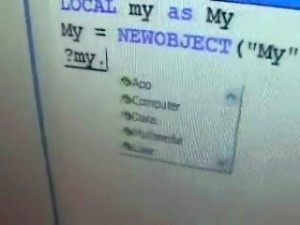"Ken Levy, Visual Studio and FoxPro product manager, takes us through the latest Visual FoxPro 9 roadmap and gives us some of his trademark cool demos of how a future version of Visual FoxPro will inte…
David Ornstein - Talking about Wikis [2005/06/16]David Ornstein is the developer who wrote the Wiki technology we use here on Channel 9 (it's called
FlexWiki and is an shared source initiative so you can add your own features to the project). Here …
Erik von Fuchs - Tour of Hardware Lab, Clip Four [2005/06/14]The tour of Microsoft Hardware labs continues. Now we check out the lab where hardware designs materialize: The Machining Lab.
Enjoy.
Running Time: 7:37
Erik von Fuchs - Tour of Hardware Lab, Clip Three [2005/06/11]The tour of Microsoft Hardware labs continues. Now we check out the reliability lab. This is where our little mouse friends get thoroughly tested for durability and reliability.
Enjoy.
Running T…
Jean Paoli and Brian Jones: More on Office Open File Formats [2005/06/10]Jean Paoli, XML Architect, and Brian Jones, Office PM, talk to Scoble about the new Office Open file formats.
Enjoy.
Running Time: 23:56
Download Size: 76 MB
Erik von Fuchs - Tour of Hardware Lab, Clip Two [2005/06/10]The tour of Microsoft Hardware labs continues. Now we check out the scanning lab in this mouse making journey of discovery.
Enjoy.
Erik von Fuchs - Tour of Hardware Lab, Clip One [2005/06/09]At this point, most of us take the common computer peripherals like mice and keyboards for granted. They're just always there. Ever wonder how one of these things gets made, from start to finish? Well…
Catherine Heller: VSTO Demo [2005/06/08]Catherine Heller is a Technical Evangelist and works closely with the VSTO team, ensuring that they build the right product for customers. She knows quite about about VSTO and in this video she writes…
Visual Studio Tools for Office: Outlook integration! [2005/06/07]Great news: Now you'll be able to use VSTO to build managed Office add-ins for Outlook! Most cool. In this video, Catherine Heller, Developer Tools Technical Evangelist chats with Andrew Whitechapel, …
Imagine Cup competition [2005/06/04]The USA finals of the Imagine Cup were hosted on Microsoft's main campus a couple of weeks ago. Dozens of teams competing to win and go onto the finals in Yokohama, Japan.
Here we dropped by to mee…
Brian Jones - New Office file formats announced [2005/06/02]Jean Paoli was bouncing around the offices here in building 18 today. Who's he? One of the co-creators of XML. Why was he happy?
Because Office just announced their new file formats all built in XM…
Jesse Kaplan -- Will your .NET 1.1 apps work on 2.0 or vice versa? [2005/06/02].NET compatibility is a big issue. Will your 2.0 apps work on 1.1 runtimes? Or, will your 1.1 apps work on the new 2.0 runtimes? What about apps hosted inside Outlook?
Jesse Kaplan, program manager…
Robert Brown -- New Speech API beta revealed [2005/05/28]The new Speech API is included in the latest Avalon bits that were just released last week. Robert Brown, here in this video, talks about the latest in speech and gives us a demo, and
on his blog giv…
Visual Basic Refactoring Tool demoed [2005/05/28]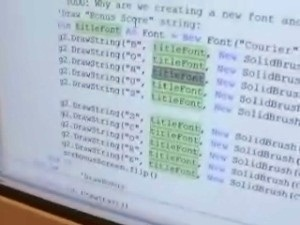Are you a Visual Basic programmer? You gotta check this video out! It shows off a
free refactoring tool for Visual Basic.NET 2005, beta 2.
Brad McCabe has the details
on his blog.
Jay Schmelzer,…
Amanda Silver - Talking about Mort [2005/05/26]Here we have a little surprise, we were walking around with Mick Stanic, founder of the
G'day World podcast (a fun geek-oriented podcast done from Australia), and ran into Amanda Silver, program mana…
Sean Daniel - Small Business Server [2005/05/20]You might have heard about the
Small Business Server. Well, we did (the sales people here tell us it's a hot seller) so we wanted to find out what it is and meet Sean Daniel, program manager on the …
Office Communicator [2005/05/18]What is Office Communicator? Well, Office Communicator team Director Andrew Sinclair sits down with us and tells us all about it.
Enjoy
Download Size: 66 MB
Simon Guest - Mainframe Interop with Avalon [2005/05/17]Karsten Januszewski and Robert Scoble heard that Simon Guest had built an app, using Microsoft's new Avalon technology, that works with mainframes.
Hmmm, a shiny frontend for a mainframe app? Well,…
Infragistics - Visual Studio Component Lab [2005/05/12]Last in the series of customer interviews at this year's VS Component Lab in Redmond. Here, we (Charles) talks to Stephen Dadoly and Tony Lombardo of Infragistics, Inc.
They make some nifty ASP.N…
Dart Communications - Visual Studio Component Lab [2005/05/11]Here we talk with Michael J. Baldwin, President of Dart Communications. His company has written a suite of VS controls including a really cool xmlhttp-based ASP.NET control that makes aspx page refres…
Syncfusion - Visual Studio Component Lab [2005/05/11]We were recently at a VS Component lab on the Redmond campus and talked to some customers about the cool components they've built to extend VS functionality. Here we talk to Daniel Jebarat, Vice Presi…
Raghavendra Prabhu - Briefly Inside the Windows Forms Designer [2005/05/11]We were recently at a Visual Studios Components lab here on the Redmond campus and ran into Raghavendra, an SDE on the Windows Forms team. He tells us a little bit about the Designer and how it's made…
MSN TV - Bringing MSN Services into the living room [2005/05/07]Scoble talks to the MSN TV people. Don't know what MSN TV is? Watch this video. In it, they discuss
MSN Remote Record Service, which lets you use your Media Center PC remotely. This video was recor…
Corey Hynes (Sunaptein Computer Consulting) - Behind TechEd's Labs [2005/05/06]Corey Hynes gives us the inside scoop of TechEd's hands on labs. TechEd has 195 of these labs. How and who sets these labs up? How much hardware does it take to run them?
Download Size: 30 MB
Martin Taylor and Bill Hilf - Linux at Microsoft, Part II [2005/05/05]Here's the second part of the conversation with Martin Taylor and Bill Hilf on Linux, Windows and Microsoft. Here we get some of the Niners' questions answered and go on a tour of Bill's lab.
Enjoy…
Martin Taylor and Bill Hilf - Linux at Microsoft, Part I [2005/05/04]Charles Torre sits down with Martin Taylor and Bill Hilf and chats about Linux, Windows and Microsoft.
Martin Taylor is Microsoft's General Manager of Competitive Strategy. He's the guy that's been…
Vinod M Kumar (MVP) - Talking about SQL Server [2005/05/03]MVP Vinod M Kumar chats with us abot SQL Server 2005.
Ken Levy, XML Tools in VS 2005 [2005/05/03]Ken Levy, a Channel 9 veteran interviewee, talks to us about the nifty XML tools in Visual Studio 2005.
Download Size - 134 MB
Enjoy
Karsten Januszewski - Home video of Avalon presentation at Flash Forward conference [2005/04/27]Karsten Januszewski, technical evangelist, presented recently at the Macromedia Flashforward conference.
"What is a Microsoft technical evangelist doing at a design conference?"
Well, …
Andy Gordon and Karthik Bhargavan - Web services security research [2005/04/27]Andy Gordon and Karthik Bhargavan (researchers from Microsoft's research center in Cambridge, England) take us out to see "Lake Bill" back on Microsoft's main campus in Redmond where we avoi…
Rick Laplante - Talking about Visual Studio Team System (Licensing), Part II [2005/04/26]Rick, general manager of
Visual Studio Team System, responds to customer complaints about VSTS's planned licensing and pricing.
Pablo Fernicola (and others) - An hour with the Avalon Team [2005/04/16]Karsten Januszewski, developer evangelist, took us over to meet with the
Avalon team. Pablo Fernicola, group program manager (guy who runs the Avalon team), Arik Cohen, lead program manager, and
Ro…
Tony Goodhew - The path to Orcas, (future Visual Studio), studying the market research [2005/04/16]Tony Goodhew, product manager on Developer Marketing, is helping write the specs for the next NEXT version of Visual Studio. No, not Whidbey, the one that comes after that!
Why are we already start…
Stefan Schackow - TechED 401 [2005/04/16]Stefan Schackow is a program manager on the Web Platform and Tools team, is giving a
TechED 401 talk and so we talk with him about what he'll be doing at TechED. TechED is in Orlando, FL, USA on June…
Tony Donno - Testing out Virtual Server [2005/04/13]Tony Donno, test manager on the
Virtual Server team (actually the Virtual Machine team) discusses what makes a great tester and the Virtual Server machine, which lets you run a variety of operating …
Ben Armstrong - Running Virtual PC and Virtual Machines [2005/04/12]What's running on Ben Armstrong's machine? Linux? Yes! BeOS? Yes! OS/2? Yes! Windows 95? Yes! Microsoft Bob? Yes! Free BSD? Yes! And about 600 other operating systems.
Come and meet the Virtual Mac…
Steve Millet - What is Indigo? [2005/04/10]Steve Millet is an architect on the Indigo team. What is Indigo? Millet says "Our next generation platform for doing Web services and messaging infrastructure."
Then Steve spends the next…
Steve Swartz - Talking about SOA [2005/04/10]Service Oriented Architecture. It's the current hype phrase for developers and architects.
One day recently Robert Scoble ran into Steve Swartz, an architect on the Indigo team, and the conversatio…
Hunter Hudson/Jon Pincus - On Spot the Bug and Code Quality, Part III [2005/04/09]Jon Pincus and Hunter Hudson talk about "Spot the Bug," which is a little game they play inside Microsoft on a mailing alias.
Hunter Hudson/Jon Pincus - On Spot the Bug and Code Quality, Part II [2005/04/09]In this second part, Jon and Hudson talk about how programming teams can get their code quality up.
Hunter Hudson/Jon Pincus - On Spot the Bug and Code Quality [2005/04/09]Hunter Hudson, development manager, programmer productivity Research center, and Jon Pincus, senior researcher on Microsoft Research, sit down with Charles Torre to talk about spotting bugs and code q…
Dustin Hubbard - Demo of Tablet PC Experience Pack [2005/04/09]Hey, Adam Curry,
the Tablet PC Team released earlier this week the Experience Pack.
I tell ya if Steve Jobs had this he'd have the Mac fans eating out of his hands. Check out the UI in this vide…
John Stallo - The Visual Studio 2005 Class Designer (3 of 3) [2005/04/07]This comes in a little late, but better than never. Right?
Part 3 is almost 11 minutes long and in it John talks about the challenges involved in building a V1 feature, how they dogfood, the best …
Cleartype Team - Talking about new Fonts on Longhorn (Happy Birthday Video #4) [0:16:38] [2005/04/06]What is the one thing looked at more than anything else on your computer?
Fonts!
You never think of them, right? Well, that's by design: good fonts aren't noticed for the most part but they are…
Anders Hejlsberg - More C# Talk from C#'s Architect (Happy Birthday Video #3) [2005/04/06]Anders Hejlsberg is going to
TechED in Orlando, FL on June 5-10, so we got Charles Torre to go over and talk with Anders about all the latest stuff happening in C# as a preview of what he'll talk ab…
Rico Mariani - Making .NET Perform (Happy Birthday Video #2) [2005/04/06]Rico Mariani, architect on the .NET Common Language Runtime Team, knows a bit about making .NET perform.
So, what about .NET? Can it perform? What are the tricks on making your apps run fast? Rico …
Scott Guthrie - Demo of next version of ASP.NET (Happy Birthday Video #1) [2005/04/06]As part of our birthday celebration, we took a trip back to see Scott Guthrie, Product Unit Manager on Web Platform and Tools team, and get a demo of the next version of ASP.NET (er, Visual Studio 200…
John Stallo - The Visual Studio 2005 Class Designer (2 of 3) [2005/04/02]I’ve personally been involved in several projects that started out with some great Visio diagrams for documentation that would eventually become stale as you progress in your coding.
In part 2 Jo…
Peter McKiernan/Jamey Tisdale - Neutrino demonstrated (new tool to help marketers work with develope [2005/04/01]April 1, 2005 -- Two of Microsoft's most talented marketers worked during their
20% time nights and weekends to come up with Neutrino, a new toolset that will enable marketers to develop .NET code (a…
Eric Lippert - Discussing Visual Studio Tools for Office [2005/04/01]We heard Eric Lippert was talking with a bunch of customers over in building 20 (that's where a lot of teams meet with groups of customers to show them new technologies).
So, we headed over there t…
John Stallo - The Visual Studio 2005 Class Designer (1 of 3) [2005/03/31]I've now done a few interviews with my co-workers building Visual Studio 2005. I always like to ask "Aside from your own feature, What is your favorite new thing about Visual Studio 2005?" …
Kang Su Gatlin - On the 64-bit Whiteboar [2005/03/30]Now we get into some 64-bit code on the whiteboard and learn some things you need to think about when you move to 64-bit systems. Kang Su Gatlin is a program manager on the Visual C++ team and…
Route 64 - Kang Su Gatlin talks about 64-bit (Part II) [2005/03/26]The conversation continues with Kang Su about 64-bit and what it means for developers.
Next week you'll hear more from the Route64 Training Tour and see some of the things you'll need to worry abou…
Route 64 - Kang Su Gatlin talks about 64-bit [2005/03/26]Over the next few days we'll bring you video from
the Route64 Training Tour when it visited Redmond.
In this first part, you meet Kang Su Gatlin (again, since he's been on Channel 9 before). Kang…
Roger Lueder - Developing MyLifeBits [2005/03/24]This is our last video from our trip to the San Francisco based "Microsoft Bay Area Research Center."
We wanted to end up with the developer working on the MyLifeBits project. So, meet Ro…
Gordon Bell - What did Gordon miss? [2005/03/24]Gordon Bell has been a leading technologist for so long that we wondered "what did he miss?" If you don't know who Gordon is, he spent 23 years (1960-1983) at Digital Equipment Corporation a…
Jim Gray - Part II of talking about Database Design [0:23:54] [2005/03/22]Here's another 24 minutes with
Jim Gray. He's one of the big minds behind SQL Server. Terra Service. And so much more. In this conversation we talk about architecture of Terra Service, among other…
Jim Gray - A talk with THE SQL Guru and Architect [0:51:55] [2005/03/20]Jim Gray is a distinguished engineer in Microsoft's Scalable Servers Research Group and manager of our Bay Area Research Center.
That doesn't even start to do justice to the role Jim has played in…
The CLR Compiler Geek Roundtable [2005/03/18]Recently the CLR team had a "Compiler Lab" which is where they meet with customers over in building 20 on Microsoft's main campus in Redmond, WA. Jeff Sandquist and Charles Torre took their …
Phalanger: PHP .NET compiler revealed [2005/03/17]Tomas Matousek and Ladislav Prosek talk about their PHP .NET compiler, Phalanger. These guys don't work at Microsoft, Charles Torre ran into them at a recent CLR compiler lab held on Microsoft's main …
Robin & Liangxiao Demonstrate the Application Designer (Part 2) [2005/03/16]Robin and Liangxiao complete
their demonstration of the application designer in this video. Here you'll see the resulting Office Application querying a class library that pulls information from a w…
Ed Triou and Andre Milbradt - A look at SQL Server Testing tools [2005/03/15]SQL Server is one of the most tested pieces of software in the world. If you remember from our tour they have four labs full of hundreds of computers that mostly do testing. Someone needs to write the…
Robin & Liangxiao Demonstrate the Application Designer (Part 1) [2005/03/15]We recently demonstrated the high level Distributed System Designers (Part 1,
Part 2, &
Part 3). Today we have a video that drills into the lower level of Application Design with Robin and Lian…
Jim Gemmell - Sensecam, and its role in MyLifeBits [2005/03/12]
The interview with the gurus who work in the Bay Area Research Center continues. Here Jim Gemmell shows off a "sensecam" that'll capture pictures and other data in response to lighting and o…
Gordon Bell - Founder of Silicon Valley's Computer History Museum (Part II of Bay Area Research Cent [0:21:11] [2005/03/11]Gordon Bell is one of the industry's top leaders and one of his most remarkable achievements, in our opinion, is the
Comuter History Museum that's in Silicon Valley (it's about a block away from…
Gordon Bell and Jim Gemmell - A look into Microsoft's Bay Area Research Center, Part I [0:43:23] [2005/03/10]Charles Torre and Robert Scoble recently visited Microsoft's Research Center in San Francisco, CA (They call it the
Bay Area Research Center) where Gordon Bell and Jim Gemmell work.
Don't know who…
Ian Huff - Using VSTS Performance Tools to Speed Up Your App (Part 2) [0:07:32] [2005/03/09]In the second half of my chat with Ian we talked about his brief (so far) history with Microsoft, dogfooding the performance tools, analysis best practices, common performance mistakes made by…
Ian Huff - Using VSTS Performance Tools to Speed Up Your App (Part 1) [0:13:22] [2005/03/08]I found Ian, a Developer on our Performance tools, because of
his blog. He has been writing a
great series of
posts that preview the Performance Profiling tools you'll find in Beta 2 of VSTS. …
Mark Boulter - talking about Smart Clients and Windows Forms, Part II [0:27:00] [2005/03/04]Mark Boulter continues his conversation about Smart Clients and Windows Forms today. If you're interested in .NET client development, you'll find this conversation with Charles Torre, of Channel 9,…
Mark Boulter - talking about Smart Clients and Windows Forms [0:28:48] [2005/03/03]Mark Boulter is a technical lead on the .NET team. Windows Forms. Client. Translation: he knows more about Windows Forms and how .NET client apps work than almost anyone else.
We spent an hour…
Scott Guthrie - Talking ASP.NET and IIS 7.0, Part II [0:25:24] [2005/03/01]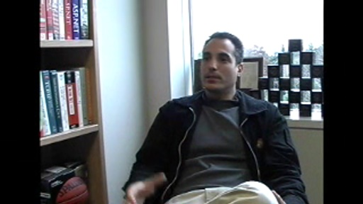Charles Torre and Robert Scoble complete their two-part interview of
Scott Guthrie here. Scott is the guy who runs the IIS (Microsoft's Web Server) and ASP.NET teams (programming environment for…
Ali and Dmitriy - Early Demo of Distributed System Designers (Part 3) [0:08:09] [2005/03/01]This is the more laid back interview portion of the show. If you have additional questions for Ali and Dmitriy after watching parts
one and
two that we didn't ask...post them here!
- josh
For…
Ali and Dmitriy - Early Demo of Distributed System Designers (Part 2) [0:23:44] [2005/02/26]In part two of this three part demo/interview Dmitriy shows how you can create diagrams that represent the logical structure of a data center for the purpose of communicating important information to…
Scott Guthrie - Talking ASP.NET and IIS 7.0 [0:33:34] [2005/02/25]Scott Guthrie is the Product Unit Manager in charge of the Web platform and tools team. That's the team that includes ASP.NET and Internet Information Server. Basically if you run a Web site that runs…
Ali and Dmitriy - Early Demo of Distributed System Designers (Part 1) [0:24:55] [2005/02/25]In January Ali
posted a preview of the Distributed System Designers to his blog. The screenshots he posted are cool, but we figured it would be better if we went over for a live demo. We split this…
Charlie Owen and John Canning - Media Center exposed, Part II [0:35:40] [2005/02/23]John Canning and Charlie Owen's passion for the
Windows Media Center comes through in this segment.
Here you get a full demo of what Media Center is. We give these two guys all of our…
Charlie Owen and John Canning - Media Center exposed, Part I [0:23:26] [2005/02/23]Last month at the Consumer Electronics Show Bill Gates showed off the latest Windows Media Center.
But we still had a bunch of questions.
So, we headed over to building 50 to meet with John…
Chris Gray - Building your own home server [0:28:56] [2005/02/22]Chris Gray, a developer in the Windows Server team (yes, we've seen Chris before in the
Windows CE videos) shows how to use managed code running on a Windows Mobile device to upload photo's from a…
Bob Palmer - Tour of Microsoft Studios [0:26:39] [2005/02/17]This is a different kind of tour. It's of one of the most top-secret facilities Microsoft has (this is one of only a handful of buildings that Scoble's badge doesn't work in, for instance). It may be…
Kevin Schofield - Tour of Microsoft Research, Part III (SmartPhone, Search, and HIV research) [0:26:31] [2005/02/08]The tour of Microsoft Research continues...this is the final of three parts.
Here we meet Raman Sarin, who was part of the team that did a cool little Seattle-area traffic reporting and prediction…
Sara Ford - Finding and Logging a Bug (Maddog Part 4) [0:18:34] [2005/02/08]Logging bugs is easy. Logging “QA” quality bugs takes a little more time, energy, and focus. Logging a bug requires a well-written title and the fewest number of steps to reproduce the bug.
In…
Kevin Schofield - Tour of Microsoft Research, Part II (machine learning) [0:22:52] [2005/02/08]In this segment you meet Eric Horvitz. Who is he? Microsoft's top inventor (he is responsible for more patents at Microsoft than any other person).
Getting a glimpse into Eric's office is like…
Sara Ford - Analyzing a Test Case Failure (Maddog Part 3) [0:07:52] [2005/02/05]Now that the test case owner knows why the test case has failed, the information, usually in the form of a bug id, is entered into Maddog. This tracking allows everyone, not just the test case…
Kevin Schofield - Tour of Microsoft Research, Part I (graphic and developer tool research) [0:25:12] [2005/02/05]Last year, you might remember,
Kevin Schofield gave us a tour of Microsoft Research that was one of our most popular video series.
So, recently he asked us back over for another tour. How could…
Sara Ford - Investigating a test case failure in the lab (Maddog Part 2) [0:09:49] [2005/02/04]Whenever a test case fails in a test case run, the owner of that test case needs to verify why the test case failed. It could have failed because of a product bug or a test case issue. The sooner a…
Herb Sutter, the Future of Visual C++, Part II [0:22:12] [2005/02/04]In this segment Herb takes us on a tour of a small part of the Visual C++ team. In there you'll meet Jonathan Caves. He's a compiler developer on the VC++ team and he likes coffee.…
Herb Sutter - The future of Visual C++, Part I [0:23:35] [2005/02/03]C++ is the language that most of Microsoft's big-name products are developed in and one of the most widely-used languages in the world.
So, we wanted to meet some of the big minds behind…
Sara Ford - Introduction to DevDiv's Test Case Management System (Part 1) [0:09:36] [2005/02/03]Maddog is the internal tool DevDiv uses for test case maintenance. Maddog provides version control for test cases and allow users to configure test case runs.
In this clip, MHagman,…
Omar Shahine - Inside Hotmail [0:25:09] [2005/02/02]Hotmail. It's a service that's often overlooked at Microsoft. But hundreds of millions of people use Hotmail every month. Billions of email messages flow through its datacenters every…
Brian Groth and Mark Berman -- Demo of SOA application [0:17:34] [2005/02/01]
Brian Groth and Mark Berman can be found in building 25. They work across the hall from a datacenter (not everyone at Microsoft has so much hardware within arms reach). What caught our attention…
Milind Lele - Demo of using new SQL Server from Visual Studio [0:21:22] [2005/01/29]Milind Lele, program manager on the Visual Studio data team, shows off some of the power of the next SQL Server, code-named Yukon, when combined with the next version of Visual Studio, code-named…
Kit George - Tour of .NET CLR Base Class Libary Team (Part III) [0:12:22] [2005/01/19]Here's the final part of the tour of the .NET CLR BCL team. Check out the books that Brian Grunkemeyer likes reading.
If you missed them, the rest of the tour is here:
Part I
Part II
Kit George - Tour of .NET CLR Base Class Library Team (Part II) [0:29:08] [2005/01/18]In this part, you'll jump right into a meeting with Brad Abrams and Joe Duffy. You can see how they think through an issue with the .NET CLR's design.
Kit George - Tour of .NET CLR Base Class Library Team [0:19:35] [2005/01/15]Our tech guru, Charles Torre, takes us over to meet Kit George and the rest of the .NET CLR BCL team.
Don't know what that is? Well, it's the class library that all .NET applications use. We start…
Josh Ledgard - Tour of Visual Studio core team (Part II) [2005/01/13]In part II of our Visual Studio core team tour, Josh and I talked with members of the Editor, Extensibility, and Help Integration teams (Part I is here). Today you meet:
Sean Laberee |
Sara Ford …
Josh Ledgard - Tour of Visual Studio core team (Part I) [0:41:32] [2005/01/12]Meet members of the Visual Studio Core team who work on the Help System, VSIP, MSBuild, and other shared IDE features. We've split the video into two parts; second part will come tomorrow. Today
Josh…
Omri Gazitt - What is Microsoft doing with Web Services? [0:31:17] [2005/01/08]Omri Gazitt is the product unit manager on the advanced Web Services team (now Indigo) at Microsoft. Here we asked him to draw a picture of the Web Services world. If you ever wondered what Web…
Stephen Toulouse - Tour around Microsoft's Security Response Center [0:31:30] [2005/01/08]Who are the people on the front lines when a security problem gets disclosed? The Security Response Center. Here you get to meet those folks.
By the way, what's the proper way to let the world know…
Daniel Lehenbauer - Demo of Avalon 3D [0:23:43] [2005/01/05]Daniel is a software design engineer on the Avalon team and he's responsible for the 3D features of Avalon.
Here he gives us a demo of Avalon 3D. Really cool stuff. Originally designed to only run…
Steve Friesen - Macintosh Business Unit Tour [0:25:19] [2005/01/05]What's this? A Macintosh on Channel 9? Are we gonna get fired for this?
Nah.
It's the Macintosh Business Unit at Microsoft. Meet some of the folks behind Virtual PC and Entourage and get a look…
Jean Paoli - Co-creator of XML, part II [0:29:23] [2004/12/29]Jean Paoli, senior director of XML architecture, and co-creator of XML, gives his vision of XML in an interview with Channel 9's Charles Torre and Robert Scoble.
This is the second part of the…
Jean Paoli - Co-creator of XML, part I [0:25:21] [2004/12/28]Jean Paoli, senior director of XML architecture, sits down for the first half of a two-part interview with us about his role in creating XML, among other things. He was recently given the…
Josh Ledgard - Cool community sites that the Visual Studio team likes [0:08:07] [2004/12/24]Next week Josh will give us a tour of the Visual Studio core team, but today he's giving us a tour of a few things that Visual Studio developers might be interested in.
John Pruitt - Thinking about the customer in design [0:04:05] [2004/12/24]This is the last part of the interview we did with John Pruitt, usability lead on the user experience team, talks about who is the target user and how knowing that will help designers and testers…
John Pruitt - Development Cycle at Microsoft [0:21:43] [2004/12/22]John Pruitt explains the development cycle at Microsoft -- the interview takes place inside the "watching" part of one of our usability labs where teams can videotape and watch everyday…
John Pruitt - Usability Testing [0:09:41] [2004/12/21]"Do the developers really listen to anything you say?" we asked.
Who is saying it? The users who come through the user testing labs at Microsoft. John Pruitt, a usability lead on the…
Ken Levy - First look at Visual FoxPro 9 [0:22:53] [2004/12/17]
Visual FoxPro 9 is here. Ken Levy chats with us about its development and gives us a demo.
Introducing MSN Toolbar Suite - Silicon Valley team (and demo!) [0:52:51] [2004/12/14]"Wicked," is how interviewer Robert Scoble reacted when he saw the MSN Toolbar Suite demoed. Today Microsoft announced the MSN Toolbar Suite beta. You can get it now…
Introducing MSN Toolbar Suite -- Redmond Team [0:52:51] [2004/12/14]
Today Microsoft announced the MSN Toolbar Suite beta. You can get it now at
http://beta.toolbar.msn.com.
The Toolbar Suite team took some time out of their busy schedule last week and here they…
Alex Kipman - Building a mobile service [0:20:07] [2004/12/11]While we were at the Topcoder contest last month handing out Nine Guys we met Alex Kipman (he is lead program manager on MS Build). He has a cool demo of using Visual Studio to build a system for a…
Don Box - What goes into a great technical presentation? [2004/12/10]
Don Box is well known for giving highly-rated presentations at industry conferences. One year
he gave a presentation in a bathtub. Another year he gave one wearing just a T-shirt.
Mike Hall took…
Euan Garden - Tour of SQL Server team (Part IV) [0:15:33] [2004/12/08]Soner Terek takes us behind an HP SuperDome computer. A terabyte of RAM. 2,500 hard drives. 64 64-bit processors.
Then Jamie Maclannan talks about data mining and gives us a demo.
This is the…
Euan Garden - Tour of SQL Server Team (Part II) [0:24:31] [2004/12/07]Here's the second part of the SQL Server team tour.
Here you'll see a customer lab (Corinna Bolender and Bren Newman show you around), MVP posters, the SQL Server team's ping-pong table, the…
Euan Garden - Tour of SQL Server Team (Part III) [0:24:35] [2004/12/04]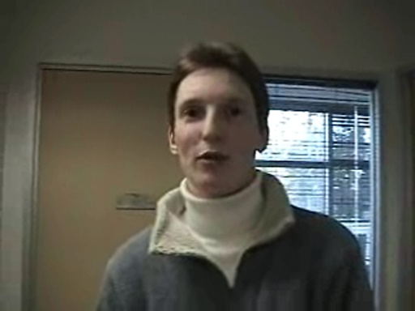Huh? What happened to Part II?
It's coming Monday, had some technical problems that we needed to fix first.
But this one is fun. You get to meet more of the team that makes SQL Server (notably…
Euan Garden - Tour of SQL Server Team (part I) [0:17:58] [2004/12/03]Building 35 is a mysterious place.
Hundreds of Microsoft employees. Thousands of computers.
What's cool about building 35? It's where they make SQL Server!
So, we wanted to get a tour of…
Michael Connolly and Jim Horne - Demo of MSN Spaces [0:14:14] [2004/12/02]Here Michael Connolly and Jim Horne demonstrate the new MSN Spaces. Oh, and this service wasn't supposed to be turned on for two more hours, so you are getting a world-wide first look at MSN Spaces…
Michael Connolly and Jim Horne - Talking about MSN Spaces [0:30:54] [2004/12/02]Just launched!
MSN Spaces. You can get your own blog/photo sharing "space" at
http://spaces.msn.com.
This integrates with the new MSN Messenger that also will be released later…
Jeremy Collins and Scott Napolitan - Tour of Enterprise Engineering Center [0:35:18] [2004/12/01]
The
Enterprise Engineering Center works with big companies. Emphasis on big. You know, banks, oil companies, and other companies with huge data centers.
What do they do? They help big companies…
Joe Morris - Developer security features in XP embedded demoed [0:09:55] [2004/12/01]Joe Morris, lead program manager on the Windows XP Embedded team, demonstrates the security enhancements made for developers in Windows XP Embedded.
Joe Morris - Windows XP Embedded [0:04:56] [2004/12/01]Joe Morris, lead program manager, on
Windows XP Embedded has a chat with Mike Hall about Windows embedded about what's involved in developing for XP embedded. If you're interested, take a listen, or…
Don Box - Testing, testing, 1,2,3... [2004/12/01]
Sorry for taking a week off. We ate and ate and ate during last week's Thanksgiving vacation.
Don Box gets us back on air with something short and fun.
More videos coming shortly.
Jason Zander - Discussing the architecture and secrets of .NET and the CLR [0:19:46] [2004/11/24]"Show us the architecture of .NET on the whiteboard," is what we asked Jason Zander and that started out an interesting discussion of what .NET is.
That led into a discussion of .NET's…
Bert Keely - SmartPhone and Tablet PC together [0:04:33] [2004/11/20]"What about those buttons on the Tablet PC?"
That got Bert Keely to talk about a future input device he helped design that might show up on Tablet PCs. (Bert is one of the visionaries…
The .NET CLR Team Tour, Part III [0:07:35] [2004/11/20]Hear the roar!
Oh, that's just the CLR team's lab where they are testing 64-bit versions of the .NET common language runtime. But, first, we drop into Adam Nathan's office where he shows us…
The .NET CLR Team Tour, Part II [0:12:36] [2004/11/19]Here Jason Zander continues his tour through the CLR team's offices.
Do you know how hard it is walking backward while trying to aim a camcorder properly?
What is that that
Kit George is…
Scott Garvey - Discussion of Smart Clients [0:10:34] [2004/11/19]Turns out we were confused about what Smart Clients were. So, we went looking for the answers. First visit? The
MSDN Smart Client Developer Center. Things came clearer into view. Then, we were guided…
Gabriel Torok - Protecting .NET applications through obfuscation [0:17:03] [2004/11/18]Gabriel Torok is CEO of Preemptive Solutions. They sell the Dotfuscator, which lets developers protect their programs against reverse engineering while making them smaller and more efficient. Here…
Alan Griver and friends - Off to visit user groups in India [0:07:36] [2004/11/18]Alan Griver, Steven Lees, and Jay Roxe are off to visit user groups in India in about a week. So, we visited them as they were hanging out at a .NET user group that meets at Microsoft's headquarters…
Mike McKay - Managing the release of Visual Studio [0:05:37] [2004/11/18]Mike McKay drives the ship room for the next version of Visual Studio. He talks about what he and his team does to get Visual Studio to get to Zero Bug Bounce (ZBB).
Mike McKay - How has exit criteria changed for Visual Studio? [0:03:18] [2004/11/18]Exit criteria are the shipping rules that a team sets for itself. For instance, one of the rules is "we won't ship with a known security issue."
Mike McKay is a program manager on the…
Constanze Roman - Writing documentation for mobile devices [0:04:50] [2004/11/17]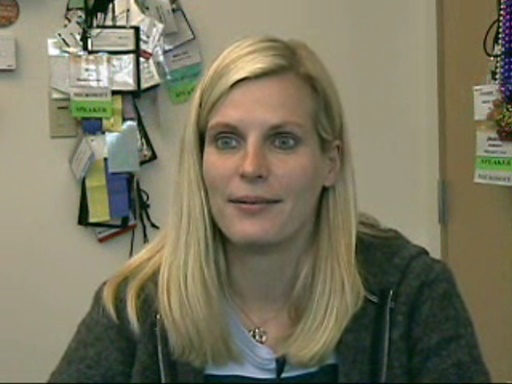Mike Hall took his camcorder over to the mobile devices team and met with Constanze Roman, a programming writer. They talk about what working as a documentation writer is like.
Balz Wyss - Exploring Voice over IP [0:03:56] [2004/11/17]VOIP to SOIP. That makes us laugh. But, how the telephone is changing is no laughing matter.
Combining video, voice, and data are changing the way we work. Balz Wyss, product manager for Windows…
Bert Keely - What should developers do to leverage Tablet PC? [0:02:31] [2004/11/13]Since Bert Keely is one of the visionary behind the Tablet PC, we wanted to know what he'd like to see developers do to take the Tablet PC further.
Bert Keely - Why does a Tablet PC have three microphones? [0:03:06] [2004/11/11]Did you know that a new Toshiba Tablet PC has three microphones?
They call them "array microphones." What is the reason? What could they be used for?
We asked Bert Keely, one of the…
Bert Keely - Tablet PC and maps [0:05:00] [2004/11/09]Bert Keely is one of the visionaries behind the Tablet PC. Over the next week or so you'll get to hear more from Bert and see his passion for the Tablet PC.
One of the more interesting things he…
Larry Osterman - His one interaction with Bill Gates (over DOS networking stack) [0:01:54] [2004/11/06]We hope you've enjoyed this week of getting to know Larry Osterman a bit better.We asked Larry about times he's had working interactions with Bill Gates (co-founder of Microsoft).Larry remembered one…
Halo 2 Coming to Earth Next Week [0:01:00] [2004/11/05]We usually don't run commercials here, but since Halo 2 is coming next week, we thought we'd give you yet
another shot of hype.
In addition to the video commercial, linked to above, here's
an…
Larry Osterman - The toughest technical problem that Larry faced [0:02:58] [2004/11/05]Larry Osterman has worked through tons of tough technical problems in his 20 years here. So, we asked him what the toughest one was that he remembered working on.
Turns out it was the Exchange 2000…
Larry Osterman - Pranks over the years at Microsoft [0:05:37] [2004/11/03]Over the 20 years that Larry's worked at Microsoft he's seen a wide variety of pranks played on people here. So, we wondered, what were the ones he remembered?
What are the funniest pranks you've…
Larry Osterman - 20 years at Microsoft [2004/11/02]
Larry Osterman has been working at Microsoft for 20 years as a software design engineer. 20 years, think about that one for a while. When he started working at Microsoft Ronald Reagan was the guy up…
Amanda Silver - Demonstration of code separation in next version of Visual Basic [0:04:12] [2004/10/30]Code separation is now done via a feature called partial types. See Amanda demonstrate how that'll help you in your Visual Basic development with the next version of Visual Basic, code-named Whidbey.…
Amanda Silver - What's the killer feature in next version of Visual Basic? [0:02:50] [2004/10/30]Whidbey is the code name. But, what does Amanda think is really cool in the next version of Visual Basic?
Meet the Photo Story 3 Team [0:28:43] [2004/10/28]Here's a small team that shipped a cool product today,
Photo Story 3, that helps you make great "stories" from your digital photos.
We sat down with the team who wrote the product so…
Vladimir Rovinsky - Demo of just released Photo Story 3 [0:23:50] [2004/10/28]Microsoft, today,
released a new version of Photo Story. It's a really great new way to share your digital photos with other people. Try it out, it's free (for people who own Windows XP).
In this…
Mike Gilbert - Demonstration of Flight Simulator 2004 [0:12:21] [2004/10/27]We didn't realize it, but Flight Simulator is 25 years old. We don't know whether its birthday was in October or November, but Bruce Artwick started Flight Simulator as his master's thesis project…
Chad Royal - What gets into the bug database? [0:09:31] [2004/10/26]Bugs, bugs, bugs.
Everyone thinks they know what a bug is. But, a bug isn't just a product defect (you know, those little buggers that get your system to crash).
Here Chad Royal, lead program…
Alex Kipman - Inside a MS Build Bug Triage meeting [0:22:07] [2004/10/26]Here the Channel 9 team was invited to sit inside a bug triage meeting. This is a unique view into how bugs (which include, but are not limited to, product defects) are dealt with. Process, process,…
Steve Lacey - Tour of the Flight Simulator team [0:41:20] [2004/10/26]Flight Simulator is one of Microsoft's coolest products. After all, what's cooler than being able to fly a Boeing 747 around the world?
It might not sound geeky enough for Channel 9, but there's a…
Amanda Silver - Getting into Visual Basic.NET [0:09:17] [2004/10/23]
Amanda Silver is a program manager on the Visual Basic team.
We wondered what VB 6 programmers needed to know about Visual Basic.NET.
We also asked her to tell us the three things that make a…
Amanda Silver - What does the lineage of VB mean to you? [0:03:04] [2004/10/23]Basic was Microsoft's first product.
So, when we met with Amanda Silver, program manager on the Visual Basic team, we thought we'd ask her about that lineage and how it affects her thinking about…
Andy Sheldon - Demo of MSN TV 2 [0:23:44] [2004/10/22]If you're a geek you can skip this video. It isn't for you.
Well, on second thought, do you have anyone in your life who doesn't yet have a computer? Who is scared of computers? Who you'd like to…
J.P. Stewart - A new hobby: putting Windows XP in your car [0:25:26] [2004/10/21]This is a different kind of video. It's not of someone talking about a Microsoft product.
It's about a Microsoft employee's hobby.
We think you'll find his hobby to be pretty darn interesting,…
Jeffrey Snover - Monad demonstrated [0:15:09] [2004/10/20]Last week you saw
Jeffrey Snover talking about Monad here on Channel 9. Here's his demo of Monad. Monad is the code-name for a new command shell for Windows.
In this video Jeffrey talks about the…
Jeffrey Snover - Monad explained [0:23:25] [2004/10/16]If you were at the PDC last fall you might have heard about Monad. That's the code-name for a new command shell. Jason Nadal,
on his blog, said he was "blown away" by what he saw.
So, of…
Paul Vick - What makes a great Visual Basic programmer? [0:08:10] [2004/10/15]
We thought we'd put Paul on the spot and ask him:
"Fill in the blank, a great VB programmer does _____."
Here's his answer.
In another video that we just posted we asked Paul to…
Paul Vick - What are some Visual Basic optimization tips? [0:03:00] [2004/10/15]
Can you make your Visual Basic.NET applications perform even faster? Since Paul is on the VB team, we thought we'd ask him for some tips.
Do you have any that you've found in your work?
Chad Royal - the wall of Visual Studio customers [0:02:37] [2004/10/15]We were hanging out in building 41 in Microsoft's headquarters the other day and saw a wall of customers' photos and a bit about what they were using Visual Studio for. So, we tracked down the guy…
Paul Vick - How does Microsoft stay relevant to next generation of programmers? [0:04:18] [2004/10/14]How do you make programming fun? How do you make it relevant? Paul Vick talks about the challenges that Microsoft has ahead of it to remain the language for the next generation of developers.
Why…
Paul Vick - What does Whidbey change in the VB language? [0:03:43] [2004/10/14]
Paul Vick, technical lead on the Visual Basic team, talks about some of the language enhancements that are being made in the next version, code-named Whidbey.
Paul Vick - What has Visual Basic learned from the Web? [0:01:51] [2004/10/13]It's Visual Basic days on Channel 9 (over the next week or so you'll learn more about the next version of Visual Basic from Paul Vick, technical lead, and Amanda Silver, architect, on the VB…
Paul Vick - Why would a VB 6.0'er consider VB.NET? [0:06:15] [2004/10/13]
If you're a Visual Basic 6.0 programmer, why would you consider moving to VB.NET? Paul Vick, technical lead (translation: smart dev) on the Visual Basic team talks to us about the trials and…
Tony Goodhew - The "Clippy" guide to developing the next version of Visual Studio [0:10:25] [2004/10/08]
"Go to Slashdot and I guarantee you that on almost any Microsoft post someone will be making a Clippy joke," Tony Goodhew says.
He's one of the guys planning out a future version of…
Tony Goodhew - Planning the "Orcas" version of Visual Studio [0:10:25] [2004/10/07]Yeah, yeah, the next version of Visual Studio isn't even done yet. You know, the "2005" version that's code-named "Whidbey."
So, why we talking about the version after that? Its…
Andrew Herbert - Discussion of Microsoft Research in Cambridge, UK [0:11:09] [2004/10/01]
Andrew Herbert, managing director at
Microsoft Research in Cambridge, UK, discusses the kinds of work that they are doing.
Thanks to our guest video guy, Mike Hall, for getting lots of…
Ken Wood - Ubiquitous computing at Microsoft Research in UK [0:10:21] [2004/09/30]Ken Wood runs the interactive systems group at Microsoft Research in Cambridge, UK.
He discusses wearable computing and other research his team is working on.
Ori Amiga - What is the killer demo for SmartPhone developers? [0:01:09] [2004/09/30]Ori gives us the one-minute pitch for what he thinks will really excite developers. How about wirelessly deploying apps to your phone via Bluetooth?
If you want a little bit more than a one-minute…
Ori Amiga - What kinds of apps can you build for the next version of Mobile Devices? [0:03:17] [2004/09/30]
What kinds of applications will you be able to build with the next version of Visual Studio? Ori discusses the kinds of apps that'll take advantage of WiFi and cellular phone technologies.
What…
Ori Amiga - Demo of Visual Studio for Devices (Whidbey) [0:03:39] [2004/09/28]Ori Amiga, program manager on the Visual Studio for Devices Team, demonstrates the next version of Visual Studio for Whidbey.
Drag and drop and, bang, you have a Web browser control right on your…
Ori Amiga - Emulator in Whidbey [0:01:27] [2004/09/28]Ori discusses the emulator that's built into the next version of Visual Studio. This makes developing apps for PocketPCs and SmartPhones very easy.
Ori Amiga - Tour of mobile devices with Visual Studio for Devices team [0:05:38] [2004/09/25]SmartPhones. PocketPCs. How do you build applications for them? With Visual Studio, of course.
There's a whole team of people who are building the next version of Visual Studio for devices.
You…
Ori Amiga - Tour of the Visual Studio for Devices team [0:21:08] [2004/09/25]Ori Amiga, group program manager on the Visual Studio for Devices team, takes us to meet his coworkers.
The video was shot on a "bug bash" where the team members were cranking to fix as…
Brett Bentsen - A look at the Portable Media Center [0:24:00] [2004/09/23]Here's a look at Microsoft's new Portable Media Center with Brett Bentsen, product unit manager of the team that built the Portable Media Center.
Gavin Bierman - Microsoft Research in UK works on database query language [0:12:17] [2004/09/21]Mike Hall recently visited Microsoft Research in Cambridge, UK, and took his camera around.
Here he interviews Gavin Bierman, who is doing research on database query languages.
Larry Gregory - How do you know you have a potential hot company? [0:02:22] [2004/09/21]Blogging and social software areas are seeing a decent amount of venture capital funding lately. So, we wondered what advice Larry Gregory would give a software developer could build a business that…
Larry Gregory - How to make an entrepreneurial impact? [0:01:53] [2004/09/21]
How can an entrepreneur make a big impact? What kind of software project should you start? What are the opportunities to build new companies?
That's what we wondered when we had a chance to sit…
Rich Davies - Inside the SPOT watch team [0:11:36] [2004/09/21]Rich Davies, program manager on the SPOT team shows us around the
latest MSN Direct watches.
Michael Tipping - Machine learning research for use on Xbox [0:13:34] [2004/09/18]Our guest video guy, Mike Hall, took his camera on a trip to Microsoft Research's labs in the UK. Hey, it's just like Redmond: rainy. Glad to see that.
Anyway, here Mike visits with a couple of…
Larry Gregory - Why should developers care about being early on a new platform? [0:02:31] [2004/09/17]Larry Gregory is the host of
Microsoft's ISV Show. The most recent show talks about Business Intelligence. So, we thought we'd turn the camera around and interview him about his view of the…
Steve Lombardi - Driving around Mapoint Location Server [0:19:33] [2004/09/15]Track your salesforce through their mobile phones? Figure out where your shipping trucks are? Is the cell phone ready for the enterprise?
Steve Lombardi, evangelist on the Mappoint team, thinks so.…
Joe Stegman - What are some tips for using Windows Forms in .NET? [0:05:53] [2004/09/15]Joe Stegman, lead program manager on the Windows Forms team, talks about some of the mistakes that developers make and gives us some tips for building great UIs for .NET.
He also talks about how to…
Chris Gray - Terminal Server Client, RDP, demo [0:11:26] [2004/09/11]Mike Hall, our new video guy scores again.
Mike takes his camera over to meet Chris Gray who is a software design engineer with the Windows networking team and gets a cool demo of a remote desktop…
Joe Stegman - What happens to Windows Forms on Longhorn? [0:03:07] [2004/09/11]We've heard lots of rumors about Windows Forms and what'll happen to that technology on the next version of Windows, code-named Longhorn.
Will WinForms still work?
Will they still be useful?
Is…
Joe Stegman - Developing rich user interfaces with Windows Forms [0:13:13] [2004/09/10]Connected applications. Rich clients. Smart Clients. Windows applications. Great looking applications. Higher productivity applications.
Whatever you call them, there is a whole world of…
Joe Stegman - Building Outlook UI in 100 lines of code with Winforms [0:07:18] [2004/09/10]Joe Stegman, lead program manager on the WinForms team (.NET client) has one of the more impressive demos we've seen.Check this out. You can build a clone of Outlook in 100 lines of code (using the…
Scott Guthrie - Tour of Microsoft's platform lab (aka building 20) [0:13:15] [2004/09/08]Every week in the Platform Lab (also known simply as "building 20") you'll find various development groups from around Microsoft meeting with customers. We wondered just what went on there,…
Don Box - final part of Indigo team tour [0:09:21] [2004/09/03]Hmm, we found more video from Don Box's tour of the Indigo team. Here you will meet lots more people like security guru Chris Kaler. Just a fun way to start the long weekend.
The first part of the…
Stephen Toulouse - How do we protect against phishing attacks? [0:03:04] [2004/09/03]Phishing attacks are becoming more frequent. What's a phish attack? When a criminal makes an email that looks like it came from a company like eBay. Tricks the user into entering passwords or credit…
Scott Currie - How is Visual C++ (Whidbey) going to make my code more secure? [0:08:04] [2004/09/03]Developers are being asked to create more secure code. The next version of Visual C++, code-named Whidbey, will introduce several new security-protection capabilities. Here Scott Currie, Scott…
Mike Hall - Another digital picture frame demonstrated [0:22:09] [2004/09/02]The next version of the electronic picture frame demonstrated. This one, based on Windows CE, has lots of new features -- like sharing on a physical Windows CE device so you can upload pictures to…
Scott Currie - What are the differences between templates and generics? [0:04:12] [2004/09/02]In templates all your specialization is happening at design time, in generics it happens at runtime. That's just one of the differences between the two. Hear Scott Currie, program manager on the…
Stephen Toulouse - What's life like in the Security Response Center? [0:03:40] [2004/09/02]Stephen Toulouse works in the security response center at Microsoft. This is the group that goes to work when a new vulnerability or attack is discovered around the world. During a crisis they'll work…
Scott Currie - Demo of Quake on .NET [0:07:46] [2004/09/01]
Scott, program manager on the Visual C++ team, shows off a demo of Quake running on .NET and talks about what that took to do that and more about Visual C++.
Stephen Toulouse - What does "responsible disclosure" mean to you? [0:01:58] [2004/09/01]Microsoft's Security Response Center gets a lot of email sent to its
secure@microsoft.com alias. Stephen kept talking about "responsible disclosure" with us so we wanted to find out just…
Stephen Toulouse - What is a virus? [0:01:05] [2004/08/31]Stephen, who works in Microsoft's Security Response Center, talks about what a virus is.
Want to be protected?
In a separate video he discusses how to protect your computer.
Stephen Toulouse - How can you protect your computer? [0:04:35] [2004/08/31]Viruses. Hackers. Bad guys. How can you protect your PC? Stephen gives the official Microsoft view. It all starts at
www.microsoft.com/protect.
Scott Currie - What improvements have been made in VC++? [0:04:25] [2004/08/31]Scott Curry, program manager for Visual C++, talks about improvements that are coming in the next version of Visual C++, code-named Whidbey.
Jim Allchin - The Longhorn Update [0:03:58] [2004/08/29]Jim Allchin is the Group Vice President for Platforms at Microsoft. The Channel 9 team sat down with Jim yesterday and asked him to share his thoughts on the updated Windows "Longhorn" plan…
Deepak Gulati - Working with ISV's in India [0:09:03] [2004/08/27]Deepak Gulati, Microsoft's community specialist, talks about working with software vendors in India. Localizing software is one of the things that Deepak works with ISV's on and he talks about the…
Deepak Gulati - Exploring Microsoft's Indian Websites [0:04:48] [2004/08/27]Deepak, Microsoft's India community specialist, gives us a tour around Microsoft's Indian Web sites.
In this video he also talks about, and demonstrates, a keyboard which transposes Hindi…
Stephen Toulouse - Introduction to Microsoft's security response center [0:10:16] [2004/08/27]Stephen Toulouse is a security program manager with Microsoft's security response center.
The security response center is the team (and place) that goes into action when a new vulnerability or…
Stewart Tansley - Take a tour around Microsoft Research faculty summit [0:06:30] [2004/08/27]Mike Hall took his camera over to interview Stewart Tansley, program manager on Research's University Relations team, and get a tour around Research's recent faculty summit. Lots of interesting stuff…
Scott Currie - Multiple language programming demo [0:08:11] [2004/08/27]Scott Currie, program manager on the Visual C++ team likes fooling around with other languages too. Here he shows off a demo of mixing VB, C#, and C++ in the same application.
Very…
Scott Currie - In VC++, how do you exploit the .NET CLR? [0:05:43] [2004/08/27]Scott Currie is a program manager on the Visual C++ team. Here he talks about what magic Visual C++ does with the .NET CLR.(talking about the next version of Visual C++,…
Andy Wilson - First look at MSR's "touch light" [0:04:20] [2004/08/25]Mike Hall took his video camera over to Microsoft Research's faculty summit recently and met up with Stewart Tansley.
Stewart gets us a demo of a new "touchlight" prototype. It's a new…
Gary Daniels and Evan Goldring - Mock whiteboard problem [0:22:04] [2004/08/25]During an interview for a technical position at Microsoft your interviewer might turn to you and ask you to write some code, or work out a problem on the whiteboard.
Here's a mock whiteboard…
Zoe Goldring and Gretchen Ledgard - Riding the Recruiting Shuttle [0:05:07] [2004/08/21]Here's the second part of "interviewing at Microsoft" with Gretchen Ledgard and Zoe Goldring.
In this part of our interview experience we meet Pat, a recruiting shuttle driver, who drives…
Joe Marini - Why I love XAML [0:09:36] [2004/08/21]
Joe Marini is a program manager here at Microsoft working on a technology that'll run on Longhorn. Here he talks about XAML, the new declarative programming language for Longhorn.
He's built some…
Don Box - Tour of Indigo Team [0:36:51] [2004/08/18]Don Box takes Channel 9 on a tour of building 42 at Microsoft. What's there? The
Indigo team. Code-name for a future set of .NET technologies that'll help you build and run connected…
Dan Appleman - What would you tell a teen about security? Why didn't you write this for parents? [0:04:04] [2004/08/18]"Teens need more security," Dan Appleman says. Here's the other videos from Dan:
On a security crusade.
Where are teenagers feeling computing pain?
What are some security tips?
How…
Dean Hachamovitch - How do you make a product that hundreds of millions of people use? [0:07:19] [2004/08/17]"Make a list" Dean Hachamovitch says. He's the guy who runs the Internet Explorer team.
But, it's a little more involved than that. Listen to Dean talk about some of the things his team…
Kosar Jaff - The networked printer [0:01:18] [2004/08/17]Way back when PCs used to be a nightmarish mess of IRQs and IO Ports (remember that?), a few nutty guys in the industry went off and came up with the idea of making a plug-and-play bus. That turned…
Dan Appleman - How does a teenager differ from a software developer (when it comes to security?) [0:03:14] [2004/08/17]Dan Appleman is a software developer. But he wrote a security book for teenagers. So, we thought it'd be interesting to ask him to compare the security needs of both.
We're talking, by the way, of…
Dean Hachamovitch - Do you have the hottest seat at Microsoft? [0:03:36] [2004/08/14]Dean Hachamovitch, the guy who runs the Internet Explorer team, seems to have a particularly tough job.
Just read all the comments over on the IE Blog.
Just how tough is it? After all, everyone…
Boyd Multerer - Can someone still make a difference at Microsoft? [0:01:01] [2004/08/14]Want to work on the Xbox Live team? Boyd is hiring developers and testers. Hear what he's looking for.
Boyd Multerer - Development and Security lessons from the Xbox Live team [0:04:25] [2004/08/14]XBox Live makes extensive use of .NET and SQL Server, so we asked Boyd what lessons developers could learn from the Xbox team (particularly about building secure systems).
Dan Appleman - Where are teenagers feeling computing pain? [0:02:41] [2004/08/14]"Is your computer acting strange?"
Then you might be a teenager who hasn't secured your computer.
Dan, co-founder of Apress books, talks about the kind of computing pain that…
Dan Appleman - On a security crusade [0:01:53] [2004/08/13]Dan Appleman is on a campaign to secure every computer in the country. To help in that goal he wrote a book:
Always Use Protection: A Teen's Guide to Safe Computing.
But that's not why we put him…
Dan Appleman - What are some security tips? [0:07:05] [2004/08/13]
This is a different kind of interview for us. Dan Appleman doesn't work at Microsoft -- he's the cofounder of the
Apress book publishing company.
So, why is he here?
Well, he's on a crusade…
Boyd Multerer - What would you show a fellow developer in Xbox Live's source code? [0:01:20] [2004/08/13]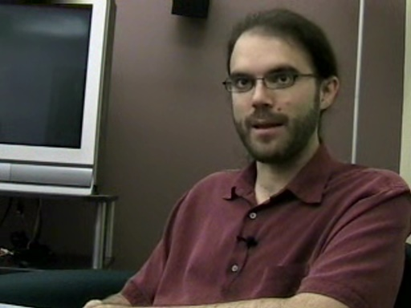Whenever we meet a developer we wonder what he or she is most proud of in their code.
What source code would you like to see at Microsoft and why?
Kenneth Spector - Coding without seeing the screen [0:12:22] [2004/08/11]Kenneth is working as an intern here at Microsoft for the summer on the Office team as a tester. He uses Visual Studio to find bugs (and to code on his own time). He writes emails in Outlook. Does all…
Boyd Multerer - Developing for Xbox [0:04:13] [2004/08/11]Ever wonder what it takes to build a game for the Xbox?
His answer? Game development today is dramatically different than it was back in the old days when a developer or two could make a bleeding…
Bert Keely - Souping up the Tablet PC [0:03:35] [2004/08/10]We ran into Bert Keely, one of the visionaries behind the Tablet PC (he's an architect on the Tablet PC team), recently at dinner and he started showing us how he had souped up his Tablet…
Boyd Multerer - How was Xbox Live developed? [0:01:20] [2004/08/10]C#? SQL Server? What place do these things have in a world of videogames? A lot, Boyd told us. Listen in.
Larry Hryb - Join in an Xbox Live game [0:01:03] [2004/08/06]Larry Hryb, aka "Major Nelson" talks about how you join in an Xbox Live game. This is a continuation of
his previous demo of Xbox Live.
So, if we got a Channel 9 Xbox Live game going,…
Mike Hall - Robot wars [2004/08/06]
A fun video of a recent Windows Embedded conference competition where attendees programmed robots to fight against each other.
Near the end of the seven-minute video attendees talk about what they …
Oji Udezue and Fabio Pettinati - The role of personas in Longhorn's design [0:06:25] [2004/08/05]Alan Cooper, in
his books and speeches in the 1990s, pushed a design methodology of starting with personas to help design new software. (You might know Alan because he designed the prototype of what…
Iain McDonald - What's the biggest suprise that will come out of Microsoft in the next year or two? [0:02:16] [2004/08/05]
"Longhorn lives," says Iain McDonald in reaction to our question of what the biggest suprise of the next year or two will be. (He is one of the guys at the center of the company -- he ran…
Boyd Multerer - Building a great development team [0:03:39] [2004/08/05]Boyd shares his secrets of how to build a great development team and the types of developers you should have on a team. It's a lot like building a great band, he says.
Boyd runs the Xbox Live…
Iain McDonald - What's the secret to being a good leader? [0:02:16] [2004/08/04]"Being frickin honest," Iain tells us is one of the secrets to being a good leader.
What does Iain know about leadership? He led the Windows XP War Room. Just a small little product you…
Boyd Multerer - The best developer [0:02:49] [2004/08/04]Boyd runs the Xbox Live development team and he has some interesting insights into what makes a great developer.
Actually, we asked him whether he was using any of the latest development…
Iain McDonald - More stories from the Windows War Room [0:04:34] [2004/08/03]Iain McDonald ran the Windows War Room. That's the room where a few dozen representatives of development teams would meet every day to keep Windows XP's team moving toward shipping.
"Windows…
Stewart Tansley - Robot Building Club [2004/08/03]
Our new camera guy, Mike Hall, found a robot enthusiast group where Stewart Tansley gave us a tour of some interesting robots that employees at Microsoft are building (or modifying) in their spare tim…
Larry Hryb - Meet Major Nelson of Xbox Live [0:01:42] [2004/08/03]You do realize that Channel 9 is partly about finding out who has the coolest job at Microsoft. We can't think of many that'd be cooler than Larry Hryb's. He's in charge of programming at
Xbox Live.…
Larry Hryb - Xbox Live Demo [0:03:20] [2004/08/03]Larry Hryb, director of programming for Xbox Live, demonstrates Xbox Live.
Over the next week you'll get to know a bit more about how Xbox Live's system was developed (the backend was done in C#…
Boyd Multerer - What is Xbox Live? [0:03:56] [2004/08/03]Boyd Multerer is development manager on the Xbox Live team. You'll get to know him more this week, but here we wanted to get to know a little more about what Xbox Live is all about.
Mythreyee Ganapathy - Visual Studio Express: perfect for India [2004/08/03]
Length of Video: 1:30 Visual Studio Express Editions excite Mythreyee because now students and beginning programmers can use to learn them to learn the latest development techniques. Mythreyee talks a…
Mythreyee Ganapathy - Recommendations for Indian students [2004/08/03]
Mythreyee Ganapathy - Recommendations for Indian students
Kam Vedbrat - Getting to know Kam Vedbrat [2004/08/03]
Kam is helping to build the graphics and animations for the next version of Windows, code-named Longhorn. Recently he went back to India to visit his relatives. He has interesting stories about his tr…
Kam Vedbrat - Did the Taj Mahal influence the design of Longhorn? [2004/08/03]
Kam recently visited the Taj Mahal and we wondered if that influenced his work on the graphic design of the next version of Windows, code-named Longhorn.
Kam Vedbrat - What did Kam learn by traveling to India? [2004/08/03]
Length of Video: 3:20
We wondered what differences between India and the United States Kam saw on his recent trip to India. Kam is working on the team that's designing the graphics and animation f…
Iain McDonald - What is the war room? [0:00:57] [2004/07/31]Iain is one of the most colorful characters at Microsoft. He ran the "war room" for Windows XP. Basically, any changes to the operating system had to go through him and his team -- and it…
Andrew Clinick - Three tips for developers using Visual Studio Tools for Office [0:04:20] [2004/07/31]Andrew has three tips for developers trying to build Office applications with Visual Studio Tools for Office.
Andrew Clinick - Demo of Visual Studio Tools for Office 2005 [0:17:35] [2004/07/30]Developing apps for Microsoft Word and Excel hasn't been as easy as it could be. That's about to change with the new Visual Studio Tools for Office. Andrew Clinick gives us a "first look"…
Peter Wengert - More on Microsoft Automotive [0:06:09] [2004/07/30]We continue the tour in the Microsoft car that we
started yesterday.
Today you see a lot more about how you'll interact with cars in the future. Driving directions. Cheapest gas. Movie theaters.…
Jamie Cool - Demo of ClickOnce [0:14:02] [2004/07/30]ClickOnce is a new deployment technology in the next version of Visual Studio (Visual Studio 2005, aka "Whidbey").
ClickOnce lets you deliver .NET apps with just a single click off of a…
Chris Gray - A super small file server [0:19:52] [2004/07/30]Our new camera guy, Mike Hall, goes and visits Chris Gray, software development engineer with the Windows CE networking team.
Chris has built a small file server with the new Windows CE 5.0. In…
Peter Wengert - Inside Microsoft Automotive [0:17:02] [2004/07/29]Mike Hall (remember
his tour of the Windows embedded lab?) took his camcorder over to get a look inside what the Windows Automotive group is doing.
Check out this car! (Er, it's a Hummer that's…
Dan Fernandez - Demo of C# Express (pull images from Google) [0:12:48] [2004/07/27]Dan Fernandez, here, demonstrates how to build a cool little application in Visual C# Express Edition (you can download that from the
Channel 9 Express site).
Follow along as Dan takes you…
Michael Howard - How hackers operate [2004/07/27]
How do bad guys work to figure out security holes? Michael Howard, Microsoft's top security guy, talks about how the bad guys go about their work.
This video is from an earlier interview we did. He…
Daniel Fernandez - Your first C# application [0:07:42] [2004/07/23]Daniel Fernandez demonstrates and discusses Visual C# Express Edition -- for beginning programmers. Visit the
Channel 9 Express site for more information on how to get started with programming the…
Brian Goldfarb - How Visual Web Developer Express is tuned for Web development [0:01:46] [2004/07/23]Want to build a Web site? You've gotta check out the new Visual Web Developer Express. The Channel 9 team has been playing with it internally and it's amazing how easy building a Web application is…
Brian Keller - J# Express for Java programmers [0:00:53] [2004/07/23]
Familiar with Java, but unfamiliar with Visual Studio? Brian tells us about what the experience of using J# Express will be like for you. Visit
Channel 9's Express Center for more info.
Kevin Schofield - Tour of Microsoft Research's Next Media group [0:08:47] [2004/07/22]Digital photography. It's one of the hottest product categories. It seems like everyone's getting a digital camera lately, but managing those photos is really hard.
Some of us on the Channel 9…
Kevin Schofield -- Tour of Microsoft Research's VIBE group (large screens/multiple monitors) [0:15:03] [2004/07/21]The tour of Microsoft Research continues. In this visit you get taken into the
VIBE group (Visualization, Interaction, Business and Entertainment).
Think large screens. Multiple screens. There…
Jason Anderson - Late night with the Burton team (Part IV) [0:23:32] [2004/07/21]Here's the final part of the late night session with the Burton team (Visual Studio Team System). In this segment, Jason and Tom answers questions from the customers who attended the presentation on…
Kevin Schofield - Tour of Microsoft Research (Social Software, Hardware) [0:26:44] [2004/07/20]The tour of Microsoft Research continues. In this segment, Kevin Schofield leads us through the social software group (Lili Cheng gives us a demo of Wallop), the cafeteria, the hardware lab, and more…
Jason Anderson - Late night with the Burton team, Part III [0:35:23] [2004/07/20]What happens when a passionate program manager, Jason Anderson, kidnaps a handful of customers and a Channel 9 camera guy? An interesting discussion about test driven development. In this segment…
Jason Anderson - Late night with the Burton team (Visual Studio Team System), Part II [0:34:22] [2004/07/17]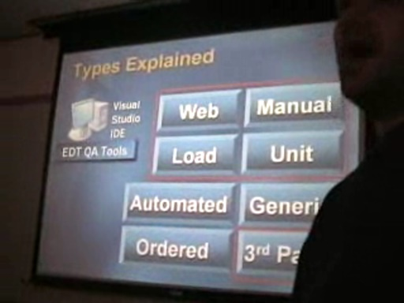Part II of "Late Night with the Burton Team" takes you further into the new world of Visual Studio Team System.
If you missed it, Part I is here. (The clip here is the second 30-minute…
Kang Su Gatlin - The power of C++ in the managed code world [0:05:34] [2004/07/17]Kang Su Gatlin, program manager on Visual C++, talks about the challenges that Visual C++ programmers have when moving to the managed code environment of .NET.
He also discloses…
Rajesh George - Three new features in SQL Server Express [0:01:38] [2004/07/17]
Trying to learn the new features in SQL Server Express with Rajesh George, the program manager for SQL Server Express. For more information on the Express Editions, visit
Channel 9's Express…
Brian Goldfarb - Working with data in the Web Developer Express Edition [0:02:04] [2004/07/17]
Brian teaches you how to work with data in the new Web Developer Express Edition. For more info, visit the
Channel 9 Express Center.
Brian Keller - First things to try with J# Express [0:00:31] [2004/07/17]
Go download the J# Express Edition (visit the
Channel 9 Express Center) and then Brian, here, tells you how to get started.
Daniel Fernandez - What's cool in C# Express? [0:00:46] [2004/07/17]
Have you tried any of the Express Editions of Visual Studio yet? Dan Fernandez talks here about what's cool in C# Express. For more information, visit the
Channel 9 Express Center.
Jason Anderson - Late night with the Burton team (Visual Studio Team System), Part I [0:21:53] [2004/07/16]This is a different kind of video for Channel 9.
Two weeks ago Robert Scoble, one of the five guys who works on Channel 9, held a geek dinner. He holds those regularly at a food court near…
Kang Su Gatlin - What is parallel debugging? [0:02:56] [2004/07/16]
Kang Su Gatlin, program manager on Visual C++'s compiler team, talks about parallel debugging. What is that? It's when you need to debug a program running on multiple processors at the same…
Kevin Schofield - Tour of MS Research's University Relations Group [0:09:57] [2004/07/16]Over the next week Kevin will take us through several parts of Microsoft Research. The first part of the tour took us through the University Relations group, where we stopped in on Sarah Revi…
Kevin Schofield - Inside Microsoft Research [0:13:13] [2004/07/15]Kevin Schofield, general manager at
Microsoft Research, has a unique job. He's responsible for helping move technologies out of Microsoft Research and into Microsoft's products.
Recently he…
Kang Su Gatlin - What about 64-bit? [0:03:29] [2004/07/15]Since Kang Su Gatlin is a program manager on Visual C++'s compiler team he has a unique viewpoint into the future of computing (the guy who develops the compiler knows what kinds of…
Christopher Brumme - The future of CLR exceptions [0:05:51] [2004/07/15]We wondered what kinds of improvements we're going to see in exceptions in future versions of .NET. Here's Christopher Brumme's answer (he's an architect on the CLR team).
Jason Flaks - What is Windows Media Connect? [0:02:46] [2004/07/15]The other day you saw Jason demonstrate Windows Media Connect. In this video Jason gives a few more details on Media Connect and how it works.
Kang Su Gatlin - What's the advantage to writing managed code in Visual C++? [0:02:13] [2004/07/14]Kang Su Gatlin, program manager on Visual C++, explains some of the advantages that C++ has over C# or VB.NET for writing managed code.
Kang Su Gatlin - "Phoenix," next-generation compiler [0:03:00] [2004/07/13]Kang Su Gatlin is a program manager on the Visual C++ compiler team and talks with us about
Phoenix, the code name for new compiler technology that his team is working with Microsoft Research…
Robert Green - What is the "My" namespace Visual Basic 2005? [0:01:40] [2004/07/13]The "My" namespace in the next version of Visual Basic promises to making programming .NET applications easier.
Here's an article on MSDN about it and Robert Green, program manager on…
Frank Swiderski - Threat Modeling Tool revealed [0:17:16] [2004/07/10]Frank Swiderski is a security software engineer at Microsoft and wrote
a threat modeling tool. So, we got a demo of the tool and discussed it, and threat modeling in general, with him.
Threat…
Robert Green - What are the new language trends in the next version of Visual Basic? [0:03:56] [2004/07/10]
Microsoft's first product was a Basic compiler. Robert Green talks about the future of Visual Basic.
Jason Flaks - Demo of Windows Media Connect [0:08:52] [2004/07/09]
You might not have heard of
Windows Media Connect technology. Jason Flaks, program manager on the Media Connects team, invited us over for a neat demo.
He shows how CD and DVD players and other…
Christopher Brumme - What are you proudest of? [0:01:19] [2004/07/09]Hey, he played a key role in the development of .NET, so we wondered just what Christopher Brumme was proudest of.
Reports from Imagine Cup in Brazil [0:08:52] [2004/07/08]Congratulations to the French team. They were named winners in the
Imagine Cup competition.
It was a long road to Brazil for the teams. More than 10,000 students competed to be invited to…
Imagine Cup - Day One [2004/07/08]
Here's video from onsite at the Imagine Cup on Day One of the competition. Meet the competitors from around the world.
Robert Green - What is exciting in the next version of Visual Basic? [0:01:31] [2004/07/08]Robert Green, program manager on the Visual Basic team, talks about what is exciting people in the next version of Visual Basic. How does he know this? He gives demos to user groups (that's how we…
Christopher Brumme - Are there things that you see developers doing with .NET that you wish they wou [0:02:11] [2004/07/08]We asked Christopher what he wished developers wouldn't do, and he turned it around and talked about what he wishes Microsoft hadn't done.
Robert Green - Demo of Visual Basic/Whidbey's data features [0:05:37] [2004/07/07]Robert Green, program manager, on the Visual Basic team, gives us a demonstration of the data features in the next version of Visual Studio (Visual Basic 2005, aka Whidbey).
Christopher Brumme - What types of support questions do you answer? [0:01:39] [2004/07/07]Christopher Brumme, architect on the CLR team, is probably one of the most knowledgeable guys on the planet about how .NET works. During his interview we wondered about the kinds of questions he was…
Dave Mendlen - Can you talk about the Web services specifications and how those process evolves? [0:03:52] [2004/07/07]Dave Mendlen, director of Web services marketing, talks about how Web services go through the standards ratification process and what that means for developers who are looking to use WS-*…
Sara Williams - Will MSDN hide any bugs? [0:00:57] [2004/07/02]Now that MSDN has a Product Feedback Center
where developers can report, and look up bugs they've found in Visual Studio 2005, we wondered if there were any bugs that would be pulled out of the…
Dave Mendlen - What is Indigo? [0:00:39] [2004/07/02]Dave Mendlen, director of Web Services marketing, talks about what Indigo is (the future of Microsoft's Web Services infrastructure). If this gets you interested, last month we posted a bit more about…
Chris Brumme - How about a type-specific try-catch mechanism for Intellisense? [0:02:43] [2004/07/02]Chris Brumme, an architect on the CLR team, talks about the CLR exception model.
Sara Williams - What makes for a good bug report? [0:01:33] [2004/07/01]Sara Williams, head of MSDN, talks about how to write a great bug report. MSDN, earlier this week, turned on the
MSDN Product Feedback Center, which is where you can report (and look up) bugs in the…
Dave Mendlen - Are there any examples of Web Service uses that you're excited about? [0:02:55] [2004/07/01]Dave Mendlen, director of Web Services marketing, talks about how Dell and other companies use Web Services.
How are you using Web Services?
Christopher Brumme - Is a managed kernel possible? [0:03:53] [2004/07/01] Christopher Brumme, architect on the .NET CLR team, talks about the long-range future of Windows. Charles Torre wants to know if a managed kernel is possible.
Christopher Brumme - Why start a weblog? [0:02:44] [2004/06/28]Christopher Brumme, architect on the .NET CLR team, has one of the more famous Microsoft weblogs.
His posts often run 11,000 words and everytime he writes a post he gets lots of links from all over…
Christopher Brumme -- Will there be improvements to .NET's garbage collector? [0:01:55] [2004/06/26]
.NET's garbage collector has a tough job. It manages your memory usage, always looking to "collect" unused memory and give it back to the system.
Obviously this is a pretty important…
Christopher Brumme - What is the future of the CLR? [2004/06/25]
Christopher Brumme is an architect on .NET's Common Language Runtime, aka CLR, team.
His weblog is famous for 11,000 word highly technical posts. That makes sense. The .NET CLR is at the center of …
Mike Hall - Why are there so many operating systems? [0:03:32] [2004/06/25]You've seen Mike Hall give a tour of his lab. You've seen him build an operating system for a new device. So why do we need a new operating system? Why can't Windows XP do everything? Mike…
Mike Hall - Windows CE and Windows Embedded Lab Tour [0:12:39] [2004/06/23]
Holy cow! Look at all these devices. Across the hall from Mike Hall's office is the Windows CE device lab. Mike, Technical Product Manager on the Windows CE team, gives us a 10-minute tour of the…
Anders Hejlsberg - What brought about the birth of the CLR? [0:02:53] [2004/06/22]"We built for the future," Anders says. It wasn't an easy road that brought us to .NET, though. Listen in as Anders explains how .NET was born (and how it differs from COM).
Chris Anderson - Why release Longhorn/Avalon so early? [0:01:27] [2004/06/22]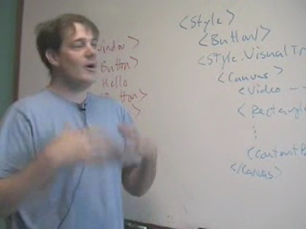Longhorn is at least two years away from shipping, so why would Microsoft release a preview of Longhorn so early?
What advice would he have for developers who want to try out the previews released…
Anders Hejlsberg - What influenced the development of C#? [0:03:09] [2004/06/19]Anders Hejlsberg, the distinguished engineer who is one of the key designers on the C# team, talks about the languages and other things that inspired the development of C#.
Chris Anderson - Compares XAML to HTML and CSS [0:02:21] [2004/06/19]Chris Anderson, architect on Avalon, shows us a little bit about how XAML will be different from using HTML and CSS to build applications.
Neil Enns: Why is it so hard to distribute mobile phone applications across operators? [0:01:36] [2004/06/17]Neil Enns discusses the challenges of releasing mobile phone software today and what we are doing to make it easier going forward.
Chris Anderson - "Hello Avalon" [0:02:14] [2004/06/17]Chris Anderson, a Software Architect on the Avalon team, discusses some of the possible first experiences programmers will have with Avalon. He demonstrates a XAML Hello World and discusses possible…
Anders Hejlsberg - Programming data in C# 3.0 [0:02:19] [2004/06/17]Anders talks about a feature he's working on for C# 3.0 that aims to make data programmable in a general purpose and truly object oriented syntax; something that just doesn't exist today.
Anders Hejlsberg - What's so great about generics? [0:01:40] [2004/06/16]Anders Hejlsberg talks about one of the biggest new feature in the next version of C#: generics.
Charles Torre interviews him in the middle of Microsoft's museum.
What are you going to use…
Richard Turner - What would you tell a college student who is trying to decide between .NET or other [0:02:08] [2004/06/16]Richard Turner, program manager on the Indigo team, has worked in Java and other languages and platforms before he got to Microsoft so we asked what his advice would be to someone starting out in…
Anders Hejlsberg - Tour through computing industry history at the Microsoft Museum [0:07:23] [2004/06/15]Anders Hejlsberg is a distinguished engineer here. At least that's his official title. But that doesn't do justice to the role he's played in the industry (first at Borland, where he ran the team that…
Jason Sutherland - What's the hardest part of managing Longhorn's build process? [0:01:42] [2004/06/12]Do you have executives who virtually watch you while you work? Are you one of a handful of guys who are at the center of building a product that generates multi-billions of dollars in revenue? Are you…
Richard Turner - What is your advice to developers who are thinking about Indigo and interoperabilit [0:03:46] [2004/06/12]Richard Turner, program manager on the Indigo team, gives developers advice about what to do today to get ready for tomorrow. Hint, it's spelled ASMX.
What if you've already invested in remoting?…
Jason Sutherland -- How have teams building Windows changed? [0:00:43] [2004/06/11]Jason Sutherland is a program manager on the developer division's release team. Translation: his team builds the .NET technology and hands it to the Longhorn team, which then builds that into…
Richard Turner - What would be the first thing about Indigo that you'd show a Visual Basic programme [0:01:22] [2004/06/11]Richard Turner is a program manager on the Indigo team (Indigo is the code-name for the technology that you'll use in the future to communicate between applications or services).
What would be the…
Robert Williams - How does the Tablet PC team come up with new features? [0:01:23] [2004/06/11]Robert Williams is an executive with the Tablet PC team and he talks about how the Tablet PC team works to come up with new features.
This team is representative of many that work at Microsoft.…
Jason Sutherland - What does a Windows build manager do? [0:00:41] [2004/06/08]
We sat down with one of the guys who runs the Longhorn build process, Jason Sutherland. He, and his team, has one of the more important jobs at Microsoft: making sure the next version of Windows…
Richard Turner - What is the biggest misperception of Indigo? [0:02:51] [2004/06/08]Richard Turner is a program manager on the Indigo team. Indigo is the upcoming platform that'll let you build service oriented systems (translation: it's how your code will talk to the rest of the…
Robert Williams - What did you learn from building the Tablet PC? [0:01:55] [2004/06/08]Robert Williams is an executive on the Tablet PC team, and since the Tablet PC has been on the market about 18 months now, we wondered what he's learned from the process of building a new product.
Neil Enns - SmartPhone: What do you want developers to do? [0:01:02] [2004/06/08]The newest SmartPhones come with the .NET Compact Framework. Neil talks about what he'd love to see Developers do with the framework.
Anyone try building a SmartPhone application yet? We'd…
Robert Hess -- How Microsoft has changed over the years? [0:00:40] [2004/06/08]Robert has been at Microsoft for over 16 years and has seen a lot of change. Learn why he came and some of the changes he has seen at Microsoft.
Rebecca Norlander - Can everyone be made happy when it comes to updating? [0:01:39] [2004/06/08]
Rebecca answers an age old question about development, can you make everyone happy?
Rebecca Norlander - why is XPSP2 so big? [0:01:20] [2004/06/04]Windows XP Service Pack 2 is about 270MB. So, we asked Rebecca "why so big?"
Some other resources on Windows XP SP2 Technical Preview:
1)
Download it.
2) Learn what it means for…
Robert Hess - a different kind of geek [0:02:10] [2004/06/04]It's Friday so we thought we'd do something a little more fun than we've been doing lately (if riding around with Senior Vice Presidents isn't fun enough).
So, we asked Robert Hess what a cocktail…
Kam Vedbrat - How are user expectations changing now that computers are being used longer every day? [0:02:13] [2004/06/04]
Kam Vedbrat, the guy who runs the team designing the graphics and animations for the next version of Windows, has a unique view of how people are changing their approach to their computers now that…
Rebecca Norlander - Demo of XPSP2 [0:09:43] [2004/06/04]Rebecca Norlander gives us a thorough demo of Windows XP Service Pack 2. Takes about 10 minutes. There's a lot in SP2, and this will get you up to date. New wireless features. Tons of security updates…
Robert Hess - Getting over sloppiness [0:01:13] [2004/06/04]Robert Hess has been teaching programming for decades (and has worked at Microsoft for 16 years) so we wondered what people get hung up on when learning programming.
What hangs you up?
A Hitchhikers Guide to Microsoft Eric Rudder picks up Lenn [0:10:24] [2004/06/03]Eric Rudder, senior vice president (in charge of server and tools business) gives Lenn Pryor a ride around Microsoft's campus in his truck and you can listen in on their conversation.
Lenn Pryor is…
Rebecca Norlander - What are the big security improvements in the upcoming Windows XP Service Pack 2 [0:02:32] [2004/06/02]Rebecca Norlander, group manager (translation: she's way higher on the organization chart than we are) in charge of the Windows XP Service Pack 2 effort invited us over to chat about the upcoming…
Robert Hess - What is a technology evangelist? [0:03:39] [2004/06/02]
Robert Hess has been around Microsoft for a long time (16 years at last count). You've probably seen Robert before, since he hosts the
.NET show on MSDN.
But there are a few other things that…
Ward Cunningham - Is there a revolution coming in the way people communicate? [0:04:38] [2004/05/29]
Ward Cunningham, architect on the pag team here at Microsoft, sees the world of communication changing rapidly. He talks about blogs, coder inspiration, Wikis, and more.
Do you see a revolution…
Robert Williams - Where did the idea for the Tablet PC come from? [0:01:49] [2004/05/29]Robert Williams is an exec on the Tablet PC team. So, we thought we'd ask him for his version of the influences (and influencers) that brought about the Tablet PC.
Neil Enns - What's cool about his SmartPhone (or, how he keeps from looking like a dork in an airpla [0:01:30] [2004/05/29]Neil Enns talks about what's cool about his SmartPhone. Music? Sure. But not looking like a dork in an airplane? Even better!
Kam Vedbrat - How the Longhorn graphics team works with the Usability team [0:01:13] [2004/05/29]
Kam, head of the team that's doing the graphics for Longhorn, talks about how his team works with the usability team to make sure that graphics in Longhorn are not just pretty, but help users be…
Kam Vedbrat - Is there one thing in Longhorn that really excite you? [0:01:38] [2004/05/28]Kam Vedbrat is heading the team that does the graphics and animations in the next version of Windows, code-named Longhorn.
Since he lives in Longhorn all day long, we wondered what he found…
Peter Loforte - What is a Tablet PC doing when someone writes on the screen? [0:02:22] [2004/05/28]Peter Loforte, general manager of the Tablet PC group, discusses what technically is happening when you put your pen on the digitizer, and what API's are available for developers to use.
Discussion…
David Winkler - What are you most proud of in the Tablet PC code you've written? [2004/05/28]
David Winkler is the developer who built much of the new user interface for Windows XP Tablet PC Edition 2005.
He's a bit shy, as you can see, but we think it's important to get you to know him cau…
Ward Cunningham - Is there a paradigm shift coming for programmers? [0:01:12] [2004/05/28]Through the history of computing, we've seen various development tools come out that tried to change how programs were written. Apple's HyperCard, for instance, or the first version of Visual Basic,…
Michael Tsang - What kinds of skills does someone need to write drivers? [0:01:17] [2004/05/28]Michael Tsang writes the drivers that run the Tablet PC, so we were wondering what kinds of skills someone would need to write drivers.
Any other driver writers hang out here? How do you see your…
Neil Enns - For end users, what should they consider when they buy a cell phone? [0:00:51] [2004/05/28]
When we were interviewing Neil Enns, who works on the SmartPhone and PocketPC teams, we wondered how he'd pitch the different technologies to end users. Here's his answer.
Ward Cunningham - Do you get religious about programming languages? [0:05:30] [2004/05/26]
Ward, inventor of the Wiki, says he's learned 100 programming languages, so we wondered if he feels particularly strongly about one of them over the others?
What's your favorite language? Did it…
Michael Tsang - The command line guy [0:00:18] [2004/05/26]
When we were over visiting the Tablet PC team, we noticed that Michael Tsang used the command line to do nearly everything. Seemed like a throwback to the DOS days, and thought it'd make an…
Neil Enns - If a cell phone developer said "I'm going to go with Java" what would you say? [0:01:30] [2004/05/26]One of the questions the SmartPhone team gets a lot is how does their development platform compare to others. So, we wondered what Neil would say.
How would you decide which platform to use if you…
Jim Newkirk and Ward Cunningham - What is Extreme Programming? [0:07:09] [2004/05/25]Jim is a co-author of Nunit and Ward invented the Wiki, and both are believers in the "Extreme Programming" methodology, so we asked them to explain why it's so important to them. Jim covers…
Neil Enns - What do developers need to think about when building applications for the SmartPhone? [0:02:01] [2004/05/25]
The newest SmartPhones come with the .NET Compact Framework, so we wondered just how different it'd be developing applications for the SmartPhone vs. a desktop PC.
Plus Neil says you can try…
Michael Tsang - On the Tablet PC how can I get my cursor to match up with my pen? [0:05:25] [2004/05/25]On our Tablet PCs we noticed that sometimes our cursor gets out of alignment with the tip of our pen.
So, we asked the guy who designed the software for the digitizer why that happens, how he tried…
Samuel Druker - How does Outlook Express in Longhorn use WinFS? [0:03:29] [2004/05/25]WinFS is the new file storage system in Longhorn and we're wondering about some ways that application developers might use it. Samuel talked about how Outlook Express will change due to WinFS.
How…
Peter Loforte - The Tablet PC has changed my life (in bed) [0:01:11] [2004/05/22]It's not often that you get a general manager at Microsoft to admit that he brings his computer to bed. But that's not the only way the Tablet PC has changed his life, in this video he explains how…
Neil Enns - What is Microsoft's SmartPhone pitch to developers? [0:01:37] [2004/05/22]
Why develop software for Microsoft's new SmartPhone operating system? Plus, how well is Microsoft supporting cell phone standards? We wondered what what Neil would say, so we asked him "what's…
Kam Vedbrat - How flexible will Longhorn's user experience be? [0:02:35] [2004/05/22]Kam, and his team, are building the new user interface for the next version of Windows, code-named Longhorn. One of the complaints we hear from people is that the computer is too controlling. In other…
Michael Tsang - How does Tablet PC's digitizer work? [0:02:22] [2004/05/22]Michael Tsang is the guy who writes the drivers for the Tablet PC's digitizer, so if there's one guy who really knows how it works, it's him.
By the way, if you are a developer interested in…
Burt Parker - When is battery life going to get better on Tablet PCs? [0:01:01] [2004/05/21]
Today's Tablet PCs get about three hours of battery life. We wondered when, or if, that'll improve. Burt Parker works with OEMs on just this issue and his answers are encouraging.
Do you see a…
Ward Cunningham - What would you teach a kid about the world of programming? [0:04:47] [2004/05/21]
Ward, the inventor of the Wiki and now an architect at Microsoft, is one of the more accomplished programmers we've interviewed, so we wondered how he would approach programming if he were to start…
Samuel Druker - What's the current state of WinFS on the recently released build of Longhorn? [0:00:41] [2004/05/21]
How complete is WinFS in the latest Longhorn developer preview release? Samuel, a development lead on the WinFS team, gives us the harsh news "the bits are hard to work with."
In other…
Neil Enns - Isn't Microsoft at a cultural disadvantage in the cell phone market? [0:01:17] [2004/05/21]
The Japanese and European cell phone users are seen as far more advanced than those in the United States. So, we wondered if that put Microsoft at a disadvantage, because Microsoft's headquarters…
Samuel Druker - What should developers do to plan ahead for WinFS? [0:01:22] [2004/05/20]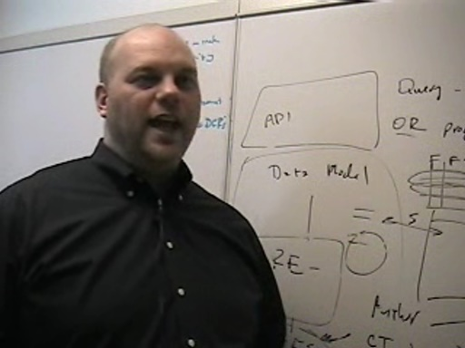Samuel Druker, development lead on the WinFS team, talks about how programmers can prepare for the file system changes coming in Longhorn in their apps today.
WinFS is the file storage system in…
Jim Newkirk - tell us about NUnit [0:02:59] [2004/05/20]Jim Newkirk is one of the co-authors of NUnit, a unit-testing framework for all .NET languages, so we asked him about how it was developed.
Jim happened to come along during our interview with Ward…
Neil Enns - Why would anyone want a cell phone with a camera on it? [0:01:56] [2004/05/20]
Neil Enns works on the SmartPhone team (the guys who build the operating system that runs cell phones) so we wondered "why would anyone want a cell phone with a camera in it?"
Susan Cameron - New Tablet PC powertoy under development [0:02:37] [2004/05/20]Susan Cameron, group product manager, for the Tablet PC group, shows off a yet-to-be-released PowerToy for the Tablet PC that converts all the fonts used on the desktop to your own handwriting -- she…
Michael Tsang - What language/tool did you use to write the Tablet PC's drivers? [0:01:23] [2004/05/20]Michael Tsang is a software design engineer on the Tablet PC team. What does that mean? He's the guy who wrote the driver software for the digitizer. He also wrote the software that handles what…
Ward Cunningham - How did you come up with the idea for the Wiki? [0:02:42] [2004/05/19]Ward Cunningham, who now works on the PAG team here (platform architecture guidance), was the guy who invented the
Wiki. Even Channel9 now has a Wiki. So, we owe that feature to Ward. Here we start…
Robert Williams - Is the Tablet PC technology good enough for using the pen only? [0:01:28] [2004/05/19]One of the questions the Tablet PC team gets a lot is "is it really ready to use with only a pen?" Robert Williams is the executive in charge of working with OEM partners. He does a lot of…
Brad Abrams - What is the future? [0:01:20] [2004/05/19]
Brad Abrams, program manager on the .NET CLR team, in his final video in his interview series, takes on the question of "what's the future?"
He raises the potential for yet another wave…
Burt Parker - What is the most suprising thing you've seen a Tablet PC used for? [0:01:09] [2004/05/19]Hot tubs? Coffee holders? Burt Parker is the OEM Product Manager on the Tablet PC team and he shares the most interesting things he's seen a Tablet PC used for.
Peter Loforte - What's cool about the upcoming Tablet PC software? [0:10:13] [2004/05/18]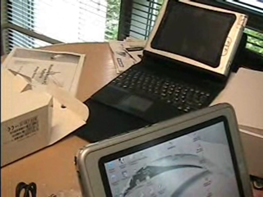Peter Loforte, general manager of the Tablet PC team, shows us what is cool about the upcoming Windows XP Tablet PC Edition 2005 software update (code-named "Lone Star.")
This is a free…
Neil Enns - Can you give us a demo of the SmartPhone? [0:02:48] [2004/05/15]Neil Enns is a lead program manager on the team that develops the SmartPhone and PocketPC software. This is a great chance for us to finally get a look at Microsoft's new SmartPhone.
More on the…
Kam Vedbrat - What influenced the visual design of Longhorn? [0:03:49] [2004/05/15]Kam Vedbrat heads the team making all the graphics for Longhorn. The icons. The animations. The Aero/glass look.
You saw a piece of his team's work if you were at the PDC last year and saw Hillel…
Samuel Druker - Can you give us a preview of what search will be like on Longhorn? [0:00:25] [2004/05/14]
We wanted to know what searching would be like on Longhorn. Sam gives us a preview. He mentions "intermediate searches." That's worth going into further here.
Imagine typing in your…
Samuel Druker - How will Longhorn's WinFS handle pictures? [0:01:34] [2004/05/14]Samuel, of the WinFS team, gives a short preview of how WinFS might handle your digital pictures.
Brad Abrams - What is missing from the CLR? [0:01:59] [2004/05/14]
We wanted to know what the .NET CLR is missing. So we asked Brad and got interesting answers. He covers both stuff that's coming in Whidbey (the next version of the CLR/Visual Studio) as well as…
Sam Druker - Answers Channel9 questions about WinFS [0:08:07] [2004/05/13]Sam Druker, development lead on the WinFS team, answers some of the questions that Channel9 readers asked about WinFS (the new file storage system in the next version of Windows, code-named…
Euan Garden - Who is SQL Server's customer? [0:03:55] [2004/05/13]As we go around Microsoft, we wonder how employees see their customers. So, we asked Euan Garden who he imagined his customers to be.
The team, he says, actually spent a lot of time thinking about…
Brad Abrams - What themes guide you in development of the CLR? [0:01:56] [2004/05/12]"Simplicity," Brad says, when asked what themes guide him in the development of CLR features. Hear the other things that Brad thinks about when coming up with new features for the .NET…
Euan Garden - Do you write code? [0:01:22] [2004/05/12]
Euan, product unit manager on the SQL Server team, talked about why he still writes code every week. For instance, he needed to understand .NET because he needed to know what his team was in for…
Euan Garden - What are the myths about SQL Server (Yukon) that you'd like to correct? [0:02:49] [2004/05/11]
Euan Garden takes on SQL Server myths. For instance, have you heard someone say that you need to be a .NET programmer to use the next version of SQL Server? Or, have you heard that SQL Server isn't…
Brad Abrams - Do you use feedback from blogs to design the CLR? [0:03:21] [2004/05/11]
"It is so much more powerful to quote a customer," Brad Abrams says. Hear how feedback from blogs and forums like those on Channel9 is changing product design decisions at Microsoft,…
Eric Gunnerson - How much magic should your compiler have? [0:01:30] [2004/05/11]Eric Gunnerson, in the final video segment of his interview, talks about how much abstraction should be built into a language, er magic. For more discussions with Eric,
visit his blog.
Brad Abrams - Why did you want to come to Microsoft? [0:01:46] [2004/05/08]
Interviews at Microsoft are famous for being tough. Brad talks about why he applied to work at Microsoft, the process of getting interviewed, and his first job as release program manager on the…
Eric Gunnerson - Why are there so many programming languages? [0:01:20] [2004/05/07]Eric Gunnerson, who is on the C# team, talks about why there are so many different computer languages. "Why isn't there only one kind of saw," he asked back.
Euan Garden - If someone wants to work on the SQL Server team, what is involved? [2004/05/07]
Ever think about working on the SQL Server team? We did too. So we asked Euan, who is a product unit manager on the SQL Server team.
Brad Abrams - When are we going to see performance increases in managed code? [0:02:02] [2004/05/06]Performance is something we all care about a lot. So we asked Brad Abrams "when are we going to see better performance in .NET?" and "what's missing from .NET and WinFX (the managed…
Euan Garden - What hardware do you use? [0:01:18] [2004/05/06]Euan and his team are building the next version of SQL Server. So we wondered "what kind of equipment is under his desk?"
Euan Garden - What is the elevator pitch for Yukon? [0:01:10] [2004/05/05]
Euan works on the SQL Server team, so we asked him "what do we need to know about the next version of SQL Server?" If you only have one minute, here's everything you need to know about…
Eric Gunnerson - What kind of feedback do you value from customers? [0:02:31] [2004/05/05]
Lots of people tell Microsoft what they'd like to see in future versions of C#, but what feedback is really listened to? Eric Gunnerson, program manager on the C# team, talks about the best kind of…
Eric Gunnerson - Take us through an average day in your life [0:01:18] [2004/05/04]To continue the theme (since
Greg Robinson told us not to ask people what working at Microsoft is like) here we get into Eric Gunnerson's daily routine. Eric is a program manager on the C#…
Brad Abrams, What do you do? What is a day like for you? [0:03:01] [2004/05/04]
Lead Program Manager Brad Abrams, who works on the CLR team, talks about what his day is like. The CLR (Common Language Runtime) is what .NET applications run on and Brad's working with both the…
Euan Garden - Why does it take so long between product ships? [0:03:05] [2004/05/04]Euan Garden is a product unit manager on the SQL Server team (he's working on the data management tools in the next version of SQL Server, code-named Yukon). In this first clip from his interview, we…
Sara Ford - When you talk about learning at Microsoft, what do you mean? [0:01:39] [2004/05/04]During the interview Sara Ford noted that she's always having to learn new things to keep up with her job. Listen to what she's been learning lately.
How do you keep up to date on this industry?
Eric Gunnerson - What is the biggest challenge for programmers? [0:02:10] [2004/05/01]Eric Gunnerson, program manager on the C# team, talks about what the big challenges are for programmers in the future.
Sara Ford - What can we do to introduce more women into computer science? [0:04:15] [2004/05/01]
This is a hot topic on the blogosphere lately so we asked Sara about how she got into computers and how to introduce more women into technology fields.
Here's some other blogs on this…
Sara Ford - Is there such a thing as a perfect product? [0:01:07] [2004/05/01]Sara Ford, tester on the Visual Studio team, hasn't met a product that doesn't have a bug that she can find. Find out why she doesn't think she'll see a perfect product in her lifetime.
Eric Gunnerson - How do you design new features for C#? [0:04:03] [2004/04/30]Eric Gunnerson talks about how the C# team decides on new features to add to the C# language.
What features would you like to see the C# team add?
Eric Gunnerson - What has the biggest change at Microsoft since you've been here? [0:01:55] [2004/04/30]
Eric Gunnerson, a program manager on the C# team, opens up his interview series by talking about the change he's seen in his years working at Microsoft (he was previously on the C++…
Sara Ford - Who decides who wins between a developer and a tester? [0:01:24] [2004/04/30]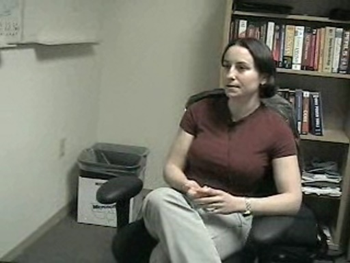Testers find bugs. Developers need to fix them. Right? But not all bugs are the same. There's a difference between a bug that every customer would hit and a small display problem that only happens…
Sara Ford - How many bugs a day do you find? [0:01:30] [2004/04/30]Sara Ford, who is a tester on the Visual Studio team, talks about how many bugs she finds a day. During the interview she also reveals that there's such a thing as a "cool" bug. Find out…
Sara Ford - What does it mean to test? [0:01:02] [2004/04/29]Sara Ford likes to play the bad guy.
She's a tester. But what does that mean?
It's an important role and it's one that places her in conflict with developers. After all, who likes to be told…
Sara Ford - Are there some misperceptions of working at Microsoft that you'd like to correct? [0:01:37] [2004/04/29]
Sara Ford thought that she'd have to work 12 to 14 hours a day at Microsoft. But that's not the only misconception she had of life at Microsoft and she talks about what she learned.
What do you…
Sara Ford - Accessibility and Visual Studio [0:02:23] [2004/04/28]Sara Ford, software design engineer and tester on the Visual Studio team, introduces herself to Channel9 (the rest of her interview will run over the next week here on Channel9).
She has an…
Scott Swanson - What does the next version of Visual Studio do for mobile users? [0:02:40] [2004/04/28]
Developing for Mobile Devices is starting to be hot and one of the things that Scott Swanson likes most about the next version of Visual Studio is the aides for building applications for the new…
Scott Swanson - How do you get updates out to help users? [0:01:18] [2004/04/28]
Getting new updates in the hands of customers is hard. Hear how the Visual Studio help team will handle help updates in Visual Studio 2005, code-named Whidbey.
One thing Scott wanted everyone to…
Scott Swanson - What about translating help to other languages? [0:03:08] [2004/04/28]
Scott Swanson, lead program manager on the Visual Studio team, talks about how the help team works to internationalize their content. They've learned some interesting things. What? For instance,…
Scott Swanson - How do you come up with new features for Help in Visual Studio? [0:05:49] [2004/04/27]Focus groups. Conferences. Blogs. Newsgroups. These are among the ways that Scott Swanson's team gathers feedback from customers. Hear him explain how the team took all that feedback and turned it…
Bill Hill - How does ClearType work? [0:01:49] [2004/04/27]Bill Hill runs the team that came up with ClearType, so we thought we'd ask him how ClearType actually works and what Bill Gates' reaction was when he first saw it.
Dare Obasanjo - Is Microsoft supporting XML standards? [0:04:04] [2004/04/27]Since Dare runs the XML team at Microsoft, we thought it'd be interesting to get his take on standards and how Microsoft works with the standards bodies.Now it's your turn, how are we doing when it…
Chris Sells - What's the most suprising thing you've learned since coming to Microsoft? [2004/04/27]
Chris Sells tells us what the most suprising thing is that he's learned about software development in the year he's been working at Microsoft: that Microsoft is organized chaos. Listen to him explain …
Dare Obasanjo - What would you pitch Bill Gates on? [0:02:47] [2004/04/27]Dare, who is a program manager on the XML team at Microsoft, tells Channel9 about what he'd pitch to Bill Gates if he had the chance.What's his answer? It revolves around social computing,…
Scott Swanson -- What are search providers in Whidbey? [0:02:21] [2004/04/24]Scott Swanson, who is a program manager on the Visual Studio 2005 team (code-named Whidbey) talks about the help SDK that developers will be able to use to plug in their own help…
Bill Hill - Why isn't ClearType on by default in Windows XP? [0:02:43] [2004/04/24]Bill Hill, the head of the typography/advanced reading technology group here, talks about
ClearType and why it doesn't work for everyone.
He also talks about why it's so important that you…
Scott Swanson - What is a "how do I" in Whidbey? [0:03:47] [2004/04/23]Scott Swanson talks about part of the new help features in the next version of Visual Studio, code-named Whidbey.
What do you think? Will this be helpful?
Dare Obasanjo - Where is Microsoft going with RSS/syndication? [0:02:21] [2004/04/23]Since Dare runs the XML team here, we wanted to know what he thought about the new syndication formats.Channel9, you might notice, uses RSS 2.0 almost everywhere. What's your favorite news aggregator?…
Michael Howard - What are the top things the average person can do to protect themselves? [0:03:47] [2004/04/22]Michael Howard, Microsoft's top security guy, talks about how to protect yourself (and your friends) from the bad guys.
Here's a hint: he doesn't let his mom run in administrator mode.
Sorry for…
Scott Swanson - Introduces himself and the new help system in Whidbey [0:07:04] [2004/04/22]Scott Swanson, lead program manager on the Whidbey Help team (Whidbey is the code-name for the next version of Visual Studio, aka Visual Studio 2005) talks about his history here at Microsoft and…
Chris Sells - How do you become an MSDN author? [2004/04/20]
Chris Sells, program manager at MSDN and the guy who runs the
Longhorn Developer Center on MSDN, talks about how you too can write for MSDN.
Dare Obasanjo - What is the biggest misperception of XML? [0:02:42] [2004/04/17]Dare Obasanjo discusses what's hard about programming XML right now and when we can expect it to become easier.
Chris Sells -- Tour of MSDN [2004/04/16]
Chris Sells, an MSDN program manager who runs the
Longhorn Developer Center, takes us on a tour of MSDN's offices. You too can jump into one of Sara Williams' meetings, walk down the hall and learn a…
Chris Sells - Is it really true that you're working on a Longhorn version of Solitaire? [2004/04/15]
Chris Sells, program manager on MSDN (he's the guy who runs the
MSDN/Longhorn developer center) talks about how he's reworking Solitaire for Longhorn.
Solitaire is, he says, the most used Windows…
Matthew Carlson - What have you learned by working at Microsoft? [0:00:37] [2004/04/14]Matthew Carlson, program manager on the
Alerts team, tells us what he's learned in his two years of working at Microsoft. Alerts are those messages that come up on the bottom of the screen if you've…
Matthew Carlson - How do we know that Microsoft isn't doing anything evil with the information custo [0:01:31] [2004/04/14]Matthew Carlson, program manager on the
Alerts team, talks about the privacy policies that are in place on MSN to protect customer's data. "Is Microsoft big brother?" Alerts let enterprise…
Matthew Carlson - What happens if Alerts goes down, say on a Saturday? Doesn't Steve Ballmer call yo [0:00:30] [2004/04/14]Matthew Carlson, program manager on the
Microsoft Alerts team, talks about what happens when a key service at Microsoft goes down. Alerts are the messages that pop up at the bottom of your screen if…
Pat Helland - What is a service oriented architecture (SOA)? [0:04:18] [2004/04/13]Pat Helland, architect at Microsoft, lets you in on the service oriented architectures are essential. "People need to drive themselves toward SOA."
Pat also has a blog where he responds to…
What 3D capabilities will Longhorn/Avalon provide? [0:03:03] [2004/04/10]
Joe Beda, development lead on the Avalon/Longhorn team, talks about the 3D capabilities that will be delivered in Longhorn (the next version of Windows).
Avalon is the next-generation graphic…
Joe Beda - What hardware will Longhorn/Avalon need? [0:03:36] [2004/04/10]Joe Beda answers "what hardware will Longhorn need?"
Joe Beda - How should developers prepare for Longhorn/Avalon? [0:06:04] [2004/04/10]Joe Beda of the Avalon team answers the question "how should developers prepare for Avalon/Longhorn?" He also covers whether or not to write for Windows Forms.
Joe Beda - Managed vs. unmanaged, how much of Avalon was done that way? [0:01:12] [2004/04/10]Joe Beda answers how much of Avalon is actually written in .NET code itself.
Joe Beda - Is all of Avalon managed? [0:00:47] [2004/04/10]Joe Beda, a development lead on the Avalon team (the graphics display technology in the next version of Windows), talks about whether Avalon's APIs are all "managed" which is really like…
Pat Helland - IT shops have evolved a lot like cities [0:02:20] [2004/04/09]Pat Helland,is one of our favorite story tellers at Microsoft. In this video Pat talks how IT has evolved a lot like cities.
Interesting? Check out Pat's
entire Metropolis webcast where he…
Joe Beda - Is Avalon a way to take over the Web? [0:03:01] [2004/04/08]Joe Beda, development lead on the Avalon team at Microsoft, discusses whether Avalon will be the technology that Microsoft uses to replace the Web.
Joe also has a weblog where you can keep in touch…
Michael Howard - When does threat modeling come into play? [0:04:41] [2004/04/08]Michael Howard, program manager on Microsoft's security team, discusses how the Internet Explorer team used threat modeling to reduce the attack surface of its software.
Michael Howard - What isn't being taught well enough in college? Security! [0:00:49] [2004/04/06]Michael Howard, Microsoft's top security official, notes that many college graduates need to get remedial security training.
Michael Howard - What if we had an unattackable system? [0:01:31] [2004/04/06]
What if Michael Howard's job became obsolete? After all, he's the top security official at Microsoft. What would the bad guys do if the system itself became unattackable?
Michael Howard - There are people out there that really want to get you [0:01:40] [2004/04/06]Michael Howard, Microsoft's top security official, talks about the risks that exist when you turn on your computer.
Eric Lippert - Have you noticed a performance hit in .NET? [0:03:46] [2004/04/06]Eric Lippert takes on the belief that .NET code doesn't perform as well as code written with other methodologies.
Eric Lippert - Isn't .NET cool because you don't need to know a lot about how the underlying system [0:00:44] [2004/04/06]Eric Lippert, Microsoft's "scripting guy," opines on what makes .NET better than, say, old-style Visual C++.
Eric Lippert - What do you think of managed code? [0:01:50] [2004/04/06]Hear Eric Lippert, software design engineer here at Microsoft (we know him as the "scripting guy" because he wrote VBScript and JScript technologies) talk about .NET code.
Levy and Griver - What didn't make it in? [0:03:52] [2004/03/27]
Jeremy Mazner asks, "What are things that couldn't make it into the product and how did you decide to put it off until next version?"
Levy and Griver - Why not complete transparency? [0:03:05] [2004/03/27]Robert Scoble asks,"Why doesn't Microsoft have complete transparency on developer tools?"
The 9 Guys - Who We Are [0:15:13] [2004/03/16]
Welcome to Channel 9. We are five guys at Microsoft who want a new level of communication between Microsoft and developers. We believe that we will all benefit from a little dialogue these days.…